<!DOCTYPE html>
<html lang="ml">
<head>
  <meta charset="utf-8">
  <meta name="viewport" content="width=device-width, initial-scale=1.0">
  <title>Chapter 2 (Pages 27-46) - Class 9 Biology</title>
  <style>

:root {
  --bg-color: #fcfcfd;
  --card-bg: #ffffff;
  --text-color: #1e293b;
  --text-muted: #64748b;
  --primary-color: #0284c7;
  --primary-light: #e0f2fe;
  --border-color: #e2e8f0;
  --radius: 10px;
  --shadow: 0 4px 6px -1px rgb(0 0 0 / 0.05), 0 2px 4px -2px rgb(0 0 0 / 0.05);
}

body {
  font-family: -apple-system, BlinkMacSystemFont, "Segoe UI", Roboto, "Noto Sans Malayalam", "Manjari", "Gayathri", sans-serif;
  background-color: var(--bg-color);
  color: var(--text-color);
  line-height: 1.8;
  font-size: 1.1rem;
  margin: 0;
  padding: 0;
}

.container {
  max-width: 860px;
  margin: 0 auto;
  padding: 2.5rem 1.5rem 5rem 1.5rem;
}

header {
  margin-bottom: 2.5rem;
  padding-bottom: 1.5rem;
  border-bottom: 2px solid var(--border-color);
}

.badge-row {
  display: flex;
  gap: 0.5rem;
  margin-bottom: 0.75rem;
  flex-wrap: wrap;
}

.badge {
  display: inline-block;
  font-size: 0.75rem;
  font-weight: 700;
  text-transform: uppercase;
  letter-spacing: 0.05em;
  padding: 0.25rem 0.65rem;
  border-radius: 9999px;
  background: var(--primary-light);
  color: var(--primary-color);
}

.badge-medium {
  background: #fef3c7;
  color: #b45309;
}

.badge-class {
  background: #dcfce7;
  color: #15803d;
}

h1 {
  font-size: 2.1rem;
  font-weight: 800;
  margin: 0.5rem 0 1rem 0;
  line-height: 1.3;
  color: #0f172a;
}

.nav-bar {
  display: flex;
  justify-content: space-between;
  margin: 1.5rem 0;
  font-size: 0.95rem;
  flex-wrap: wrap;
  gap: 0.5rem;
}

.nav-bar a {
  color: var(--primary-color);
  text-decoration: none;
  font-weight: 600;
  padding: 0.5rem 1rem;
  border-radius: var(--radius);
  background: var(--card-bg);
  border: 1px solid var(--border-color);
  transition: all 0.2s ease;
}

.nav-bar a:hover {
  background: var(--primary-light);
  border-color: var(--primary-color);
}

.nav-bar .disabled {
  color: var(--text-muted);
  pointer-events: none;
  border-color: transparent;
  background: transparent;
}

.page-section {
  background: var(--card-bg);
  border: 1px solid var(--border-color);
  border-radius: var(--radius);
  box-shadow: var(--shadow);
  padding: 2rem;
  margin-bottom: 2.5rem;
}

.page-header {
  display: flex;
  align-items: center;
  justify-content: space-between;
  margin-bottom: 1.25rem;
  padding-bottom: 0.5rem;
  border-bottom: 1px dashed var(--border-color);
}

.page-number {
  font-size: 0.8rem;
  font-weight: 700;
  text-transform: uppercase;
  color: var(--text-muted);
  letter-spacing: 0.05em;
}

.page-content p {
  margin: 0 0 1.25rem 0;
  white-space: pre-wrap;
  word-break: break-word;
}

.page-content p:last-child {
  margin-bottom: 0;
}

.diagram-card {
  margin: 2rem 0;
  text-align: center;
  background: #f8fafc;
  border: 1px solid var(--border-color);
  border-radius: var(--radius);
  padding: 1rem;
  overflow: hidden;
}

.diagram-card img {
  max-width: 100%;
  height: auto;
  border-radius: calc(var(--radius) - 4px);
  display: inline-block;
  box-shadow: 0 2px 4px rgba(0,0,0,0.04);
}

.diagram-card figcaption {
  font-size: 0.85rem;
  color: var(--text-muted);
  margin-top: 0.75rem;
  font-weight: 500;
}

footer {
  margin-top: 3rem;
  padding-top: 2rem;
  border-top: 2px solid var(--border-color);
}

  </style>
</head>
<body>
  <div class="container">
    <header>
      <div class="badge-row">
        <span class="badge badge-class">Class 9</span>
        <span class="badge badge-medium">Malayalam Medium</span>
        <span class="badge">Biology</span>
        <span class="badge">Part 1</span>
      </div>
      <h1>Chapter 2 (Pages 27-46)</h1>
      <div class="nav-bar"><a href="part_1_chapter_01.html">← Chapter 1 (Pages 7-26)</a><a href="index.html">☰ Index</a><a href="part_1_chapter_03.html">Chapter 3 (Pages 47-66) →</a></div>
    </header>
    <main>
      <section class="page-section" id="page-27">
  <div class="page-header"><span class="page-number">Page 27</span></div>
  <figure class="diagram-card" id="fig_ch02_p027_01"><figcaption>Figure fig_ch02_p027_01 (Page 27)</figcaption></figure>
  <figure class="diagram-card" id="fig_ch02_p027_02"><figcaption>Figure fig_ch02_p027_02 (Page 27)</figcaption></figure>
  <figure class="diagram-card" id="fig_ch02_p027_03"><figcaption>Figure fig_ch02_p027_03 (Page 27)</figcaption></figure>
  <figure class="diagram-card" id="fig_ch02_p027_04"><figcaption>Figure fig_ch02_p027_04 (Page 27)</figcaption></figure>
  <figure class="diagram-card" id="fig_ch02_p027_05"><figcaption>Figure fig_ch02_p027_05 (Page 27)</figcaption></figure>
  <figure class="diagram-card" id="fig_ch02_p027_06">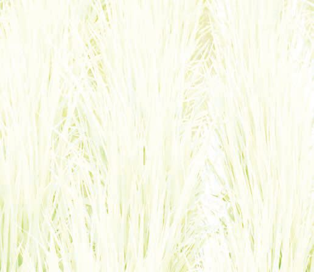<figcaption>Figure fig_ch02_p027_06 (Page 27)</figcaption></figure>
  <figure class="diagram-card" id="fig_ch02_p027_07">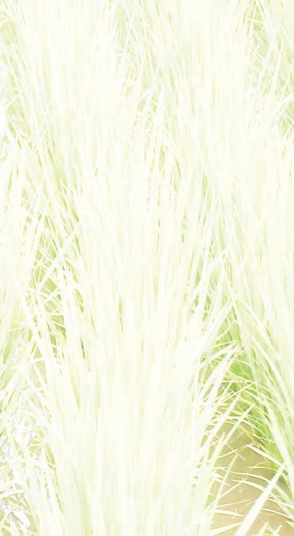<figcaption>Figure fig_ch02_p027_07 (Page 27)</figcaption></figure>
  <figure class="diagram-card" id="fig_ch02_p027_08"><figcaption>Figure fig_ch02_p027_08 (Page 27)</figcaption></figure>
  <figure class="diagram-card" id="fig_ch02_p027_09"><figcaption>Figure fig_ch02_p027_09 (Page 27)</figcaption></figure>
  <figure class="diagram-card" id="fig_ch02_p027_10"><figcaption>Figure fig_ch02_p027_10 (Page 27)</figcaption></figure>
  <figure class="diagram-card" id="fig_ch02_p027_11"><figcaption>Figure fig_ch02_p027_11 (Page 27)</figcaption></figure>
  <figure class="diagram-card" id="fig_ch02_p027_12"><figcaption>Figure fig_ch02_p027_12 (Page 27)</figcaption></figure>
  <figure class="diagram-card" id="fig_ch02_p027_13"><figcaption>Figure fig_ch02_p027_13 (Page 27)</figcaption></figure>
  <figure class="diagram-card" id="fig_ch02_p027_14"><figcaption>Figure fig_ch02_p027_14 (Page 27)</figcaption></figure>
  <figure class="diagram-card" id="fig_ch02_p027_15"><figcaption>Figure fig_ch02_p027_15 (Page 27)</figcaption></figure>
  <figure class="diagram-card" id="fig_ch02_p027_16"><figcaption>Figure fig_ch02_p027_16 (Page 27)</figcaption></figure>
  <figure class="diagram-card" id="fig_ch02_p027_17">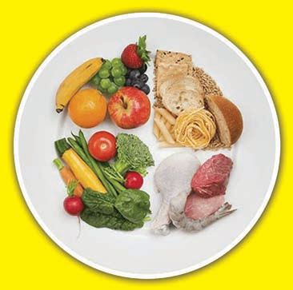<figcaption>Figure fig_ch02_p027_17 (Page 27)</figcaption></figure>
  <figure class="diagram-card" id="fig_ch02_p027_18"><figcaption>Figure fig_ch02_p027_18 (Page 27)</figcaption></figure>
  <div class="page-content">
    <p>zœ“”šȻc IX</p>
    <p>‰§¢ƃǯ§
“‘ÅăšvĞśǫ“Å–ŒœÕ‚š—šŽcs’›¢ÚĬ‚§e†›“šŽDZŒš§ˆă
ڏ›sÇ ˆ’āÇ š†DZāÇ ˆšc ˆšÆˆųā‘c ˆ
“ÅuāÇŒšc–c mų›“š§ ‹äĹ›Æ iÇ¡ƀ}¢Ĺ
Ĭ‚§ ˆ’ā‘›c ˆăڏ›s‘›c šŽš‘c “›ǮšŒ›†sÇ
š‚ÚÇ ŒǮ ¢ˆš•sv}sāÇ †šŽsÇ mų›“
e}ā››Ž›Úų f¢ŽšuDZsŽŒš zœ“›‚Ĺ›†§
‰§¢ƃǮ§ mų –ÿƹc –—šsŒš§ pŽ ¢ƃǮ›¡ź
ˆs‚›‹šuc ˆ’ā‘c ˆăڏ›s‘c sšÆ‹šuc š†DZ
ā‘csšÆ‹šuc ¢ƂšĞœÄe}ā›‹äā‘cpŽ
øš–§ ˆš¢š ˆšÆˆųā¢‘š e}ā›‚Œš§ pŽ
‰§¢ƃǮ§ zÿ§ ‰›¡ź  iˆ¢šuc gų§ sĞ›s‘›Æ
sž}›“ŽųĬ§ gŎc ‹äā‘›Æ s¢š› sž}‚c
¢ˆš•sŒžDZc s“Œš§ g‚§ ¢ˆš•sڝ“›†§ sšŽŒš
ų
sscŒǮ§ f¢ŽšuDZƂLjāÇiĬšÚsc
¡xƭųƂ‹š‚‹
äcs’›Úš‚›Ž›Úų‚§ sĞ›s‘›Æ–Å“–š šŽŒš§g‚§ 䜁ciÚc
‚žāÆ ˆ~†Ĺ›Æ NJŗ›Ƽš§Œ Œ“› ‚}ā› ˆ ƂLjā‘c iĬšÚc
e‚¡sšĬ§”Ž›š‹äŽœ‚›sĞ›sÇ”œŒš¢ÚĬ‚Ĭ§
sĞ›s‘¡} ‹ä”œā‘c f¢ŽšuDzƂljā‘c  mų
“›•Ĺ›Æ †›ā‘¡} Ǘž‘›¡ sĞ›s¡‘ iÇ¡ƀ}Ĺ› pŽ
¢Ƃšzç§ ‚ššÚž s¡Ĭ՝sÇ f¢ŽšuDZƂ“ÅĹsŽŒš
›ˆÿ“㧠ƂLjˆŽ›—ŽĹ›†ǫŒšÅuāÇe“cŠ›Úž
zœ“›sÇ ¢ˆš•sāÇښ› Šš—DZˆŽ›Ǚ›‚››Æ †›ų§
f—šŽc –ǴœsŽ›Úsc Ƃ¢šz†¡ƀ}Ĺsc ¡xƭų
Ƃ⛍š§ ¢ˆš•c ¢ˆš•Ƃ⛍›¡ vĞāÇ
n¡‚ƼšŒš§#
y
y
y
y
y „—†š“”›Ǐā‘¡}ˆŦǫÆ
vv}†ǫzœ“›s‘›Æ†›ų§–ÿœÅĴv}†ǫzœ“›s
‘›¢Ú§ ¢ˆšs¢Ŧšc ¢ˆš•Ƃ⛍c–ÿœÅĴŒšsų
ns¢sš”zœ“›š eŒœŠ›¡c Š—¢sš”zœ“›š
£—Ħ›¡c ¢ˆš•Ƃ⛍sÇx›ŅœsŽc 2.1ƆÆ
s››Ž›Úųe“‚šŽ‚ŒDZc ¡xƪ§ˆĞ›s 2.2ˆžÅśšÚž
27</p>
  </div>
</section><section class="page-section" id="page-28">
  <div class="page-header"><span class="page-number">Page 28</span></div>
  <figure class="diagram-card" id="fig_ch02_p028_01"><figcaption>Figure fig_ch02_p028_01 (Page 28)</figcaption></figure>
  <figure class="diagram-card" id="fig_ch02_p028_02">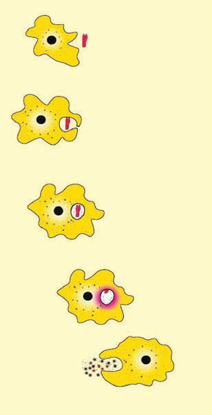<figcaption>Figure fig_ch02_p028_02 (Page 28)</figcaption></figure>
  <figure class="diagram-card" id="fig_ch02_p028_03">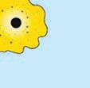<figcaption>Figure fig_ch02_p028_03 (Page 28)</figcaption></figure>
  <figure class="diagram-card" id="fig_ch02_p028_04"><figcaption>Figure fig_ch02_p028_04 (Page 28)</figcaption></figure>
  <figure class="diagram-card" id="fig_ch02_p028_05">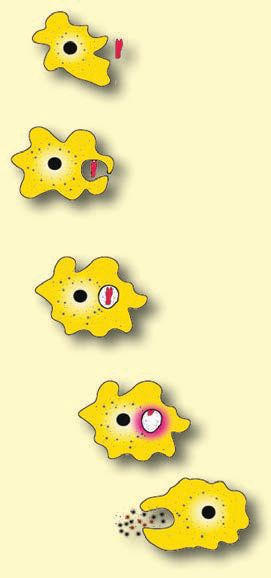<figcaption>Figure fig_ch02_p028_05 (Page 28)</figcaption></figure>
  <figure class="diagram-card" id="fig_ch02_p028_06"><figcaption>Figure fig_ch02_p028_06 (Page 28)</figcaption></figure>
  <figure class="diagram-card" id="fig_ch02_p028_07"><figcaption>Figure fig_ch02_p028_07 (Page 28)</figcaption></figure>
  <figure class="diagram-card" id="fig_ch02_p028_08">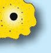<figcaption>Figure fig_ch02_p028_08 (Page 28)</figcaption></figure>
  <figure class="diagram-card" id="fig_ch02_p028_09"><figcaption>Figure fig_ch02_p028_09 (Page 28)</figcaption></figure>
  <figure class="diagram-card" id="fig_ch02_p028_10"><figcaption>Figure fig_ch02_p028_10 (Page 28)</figcaption></figure>
  <figure class="diagram-card" id="fig_ch02_p028_11"><figcaption>Figure fig_ch02_p028_11 (Page 28)</figcaption></figure>
  <figure class="diagram-card" id="fig_ch02_p028_12"><figcaption>Figure fig_ch02_p028_12 (Page 28)</figcaption></figure>
  <figure class="diagram-card" id="fig_ch02_p028_13"><figcaption>Figure fig_ch02_p028_13 (Page 28)</figcaption></figure>
  <figure class="diagram-card" id="fig_ch02_p028_14"><figcaption>Figure fig_ch02_p028_14 (Page 28)</figcaption></figure>
  <figure class="diagram-card" id="fig_ch02_p028_15"><figcaption>Figure fig_ch02_p028_15 (Page 28)</figcaption></figure>
  <figure class="diagram-card" id="fig_ch02_p028_16">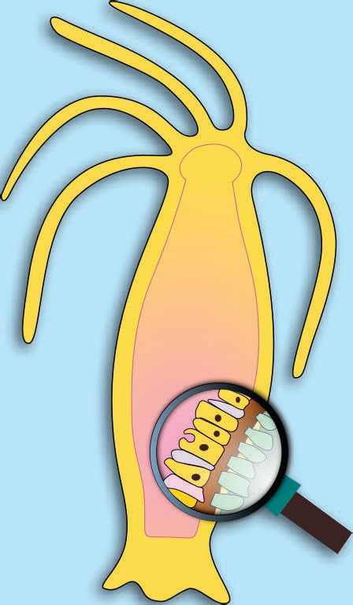<figcaption>Figure fig_ch02_p028_16 (Page 28)</figcaption></figure>
  <figure class="diagram-card" id="fig_ch02_p028_17"><figcaption>Figure fig_ch02_p028_17 (Page 28)</figcaption></figure>
  <figure class="diagram-card" id="fig_ch02_p028_18"><figcaption>Figure fig_ch02_p028_18 (Page 28)</figcaption></figure>
  <figure class="diagram-card" id="fig_ch02_p028_19"><figcaption>Figure fig_ch02_p028_19 (Page 28)</figcaption></figure>
  <figure class="diagram-card" id="fig_ch02_p028_20"><figcaption>Figure fig_ch02_p028_20 (Page 28)</figcaption></figure>
  <figure class="diagram-card" id="fig_ch02_p028_21"><figcaption>Figure fig_ch02_p028_21 (Page 28)</figcaption></figure>
  <figure class="diagram-card" id="fig_ch02_p028_22"><figcaption>Figure fig_ch02_p028_22 (Page 28)</figcaption></figure>
  <figure class="diagram-card" id="fig_ch02_p028_23"><figcaption>Figure fig_ch02_p028_23 (Page 28)</figcaption></figure>
  <figure class="diagram-card" id="fig_ch02_p028_24"><figcaption>Figure fig_ch02_p028_24 (Page 28)</figcaption></figure>
  <figure class="diagram-card" id="fig_ch02_p028_25"><figcaption>Figure fig_ch02_p028_25 (Page 28)</figcaption></figure>
  <figure class="diagram-card" id="fig_ch02_p028_26"><figcaption>Figure fig_ch02_p028_26 (Page 28)</figcaption></figure>
  <figure class="diagram-card" id="fig_ch02_p028_27"><figcaption>Figure fig_ch02_p028_27 (Page 28)</figcaption></figure>
  <figure class="diagram-card" id="fig_ch02_p028_28"><figcaption>Figure fig_ch02_p028_28 (Page 28)</figcaption></figure>
  <div class="page-content">
    <p>zœ“”šȻc IX
£—Ħ¡}źÚ›‘s‘¡}
–—šĹšÆgŽ¡
ŒŽ“›ƀ›ă§“šƩǫ›š
ڝsc”ŽœŽe›Æ
mśڝsc¡xƭų</p>
    <p>eŒœŠ
f—šŽ“ǘ“›†}Ĺ§
sˆ}ˆš„ā‘ˆ¢šu›ă§
f—šŽ¡Ĺ
¢sš”Ĺ›†ǫ›šÚų
f—šŽc‰§
“šsDZž‘›†ǫ›Æ
s</p>
    <p>”ŽœŽe¡}iNj›Ĺ›
›¡ ¢sš”āÇiƈš„›
ƀ›ÚųmÄ£–Œs‘¡}
Ƃ“ÅņŚÆ”ŽœŽ
e›Æ“㧄—†c
fŽc‹›Úų
¢sš”Šš—DZ„—†c
¢sš”Ĺ›†ǫ›¡Ĺų
‹šu›sŒš›„—›ăv}s
ā¡‘‰§“šsDZž‘›¡
mÄ£–ŒsLjžÅĴŒšc
„—›ƀ›Úų
¢sš”šŦŽ›s„—†c</p>
    <p>mÄ£–ŒsÇ
f—šŽ¡Ĺ„—›ƀ›Úų
¢sš”šŦŽ›s„—†c
e“”›ǏāÇ
¢sš¢”šˆŽ›‚
śž¡} ˆŦǫų</p>
    <p>e“”›ǏāÇ“š›ž¡}
ˆŦǫų</p>
    <p>x›ŅœsŽc2.1 eŒœŠ›¡c£—Ħ›¡c¢ˆš•c</p>
    <p>eŒœŠ</p>
    <p>–žx†
”ŽœŽv}†</p>
    <p>£—Ħ</p>
    <p>ns¢sš”c</p>
    <p>f—šŽ–ǴœsŽ¢šˆš ›
„—†c†}ڝų‹šuc</p>
    <p>¢sš”Ĺ›†sŧ</p>
    <p>„—†š“”›Ǐā‘¡}ˆŦǫÆ
ˆĞ›s2.2 eŒœŠ›¡c£—Ħ›¡c¢ˆš•c
ns¢sš”zœ“›š eŒœŠ›Æ †›ų§ vv}†ǫ Š—¢sš”
zœ“›š £—Ħ›¢¡Úŝ¢ƠšÇ ¢sš”šŦŽ›s„—†Ĺ›†
(Intracellur digestion) ˆ¡Œ ¢sš”Šš—DZ„—†c (Extracellur digestion)
sž}›†}ڝų‚š›Œ†Ǡ›šÚ›¢ƼšŠ—¢sš”zœ“›s‘›Æ¢ˆš
•sš“”DZāÇ †›¢“Ǯų‚›†§ „—†“DZ“Ǚ›c„—†Ƃ⛍
›c †›Ž“ ›£““› DZā‘c–ÿœÅĴ‚s‘ciÇ¡ƀĞ›Ž›Úų
28</p>
  </div>
</section><section class="page-section" id="page-29">
  <div class="page-header"><span class="page-number">Page 29</span></div>
  <figure class="diagram-card" id="fig_ch02_p029_01"><figcaption>Figure fig_ch02_p029_01 (Page 29)</figcaption></figure>
  <figure class="diagram-card" id="fig_ch02_p029_02"><figcaption>Figure fig_ch02_p029_02 (Page 29)</figcaption></figure>
  <figure class="diagram-card" id="fig_ch02_p029_03"><figcaption>Figure fig_ch02_p029_03 (Page 29)</figcaption></figure>
  <figure class="diagram-card" id="fig_ch02_p029_04"><figcaption>Figure fig_ch02_p029_04 (Page 29)</figcaption></figure>
  <figure class="diagram-card" id="fig_ch02_p029_05">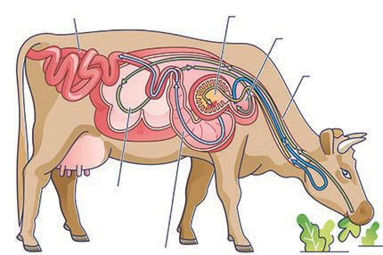<figcaption>Figure fig_ch02_p029_05 (Page 29)</figcaption></figure>
  <div class="page-content">
    <p>zœ“”šȻc IX</p>
    <p>£““› DZŒšÅų‹äDZ“ǘÚ‘š§Œ†•DZÄf—šŽŒšÚų‚§
g“¡} „—†c mƂsšŽŒš§ †}ڝų‚§# x›ŅœsŽc 
“›”s†c ¡xƪ§†›uŒ†c ŽžˆœsŽ›Úž</p>
    <p>„—†c (Digestion)
–ÿœÅĴŒšf—šŽv}sā¡‘
fu›ŽĹ›†š›vv}sā‘šÚųƂ⛍</p>
    <p>šũ›s„—†c</p>
    <p>Žš–›s„—†c</p>
    <p>0HFKDQLFDO&#x27;LJHဧLRQ</p>
    <p>&amp;KHPLFDO&#x27;LJHဧLRQ</p>
    <p>f—šŽ¡Ĺ ¡xs›ss‘šÚ›ŒšǮų
ˆƼsÇf—šŽ¡Ĺx“ăŽƩų
‚›ž¡}cfŒš”Ĺ›¡c
¡xs}›¡c ¢ˆ”›s‘¡}”ÞŒš
–¢ÿšxā‘›ž¡}cg‚§–š DZŒšsų</p>
    <p>„—†Ž–ā‘›¡mÄ£–Œs‘¡}
Ƃ“ÅņŚÆ–ÿœÅĴŒš
¢ˆš•sv}sāÇfu›Ž¢šuDZŒš
vv}sā‘š›Œšų</p>
    <p>x›ŅœsŽc 2.2 „—†c
šũ›s„—†c
†}ڝų‹šuāÇ
n¡‚ƼšŒš§#
y “š§
y
y
h‹šuā‘›Æ
šũ›s„—†c
†}ڝų‚§
mƂsšŽŒš§#
x›ŅœsŽc 2.3
–žxsāÇچ
–Ž›ă§“›”s†c
¡xƪ§s›ƀ§
‚ƭššÚž</p>
    <p>e“›Ú›†ˆ›ų›Æ
“›NJŒ›Ú¢Ơš’c
¡xs}Æ
pŒš–c
ˆ”ÚÇ
¡Ǯ›Úc
‚}Å㍚›
eų†š‘c
x“ڝų‚§
†›āÇNJŗ›ă›
Ğ›¢Ƽ#g“¡}
fŒš”Ĺ›†§
†šsÇiĬ§
ž¡ŒÄ
žŒÄ¡Ǯ›Úc
pŒš–ce¡ŠšŒš–c
e¢ŠšŒš–c
mų›“š“
f—šŽĹ›¡
¡–Ƽ¢š–§¡—Œ›¡–Ƽ¢š–§Œ‚šv}sā¡‘
žŒ†›c¡Ǯ›ÚĹ›ciǫ–žä§Œzœ“›sÇ
iƈš„›ƀ›ÚųmÄ£–ŒsÇ“›v}›ƀ›ÚųžŒ†›Æ
‚šÆښ›sŒš›–c‹Ž›Úųhf—šŽc‚›Ž›¡s“š›Æ
mś“œĬcx“ăŽƩ¡ƀ}ų¢‚š¡}„—†Ƃ⛍sž}‚Æ
sšŽDZ䌌šsų
29</p>
  </div>
</section><section class="page-section" id="page-30">
  <div class="page-header"><span class="page-number">Page 30</span></div>
  <figure class="diagram-card" id="fig_ch02_p030_01"><figcaption>Figure fig_ch02_p030_01 (Page 30)</figcaption></figure>
  <figure class="diagram-card" id="fig_ch02_p030_02"><figcaption>Figure fig_ch02_p030_02 (Page 30)</figcaption></figure>
  <figure class="diagram-card" id="fig_ch02_p030_03"><figcaption>Figure fig_ch02_p030_03 (Page 30)</figcaption></figure>
  <figure class="diagram-card" id="fig_ch02_p030_04"><figcaption>Figure fig_ch02_p030_04 (Page 30)</figcaption></figure>
  <figure class="diagram-card" id="fig_ch02_p030_05"><figcaption>Figure fig_ch02_p030_05 (Page 30)</figcaption></figure>
  <figure class="diagram-card" id="fig_ch02_p030_06"><figcaption>Figure fig_ch02_p030_06 (Page 30)</figcaption></figure>
  <figure class="diagram-card" id="fig_ch02_p030_07">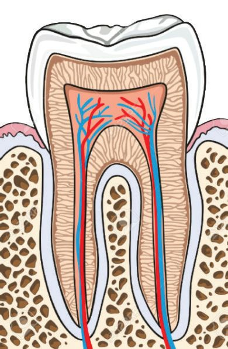<figcaption>Figure fig_ch02_p030_07 (Page 30)</figcaption></figure>
  <figure class="diagram-card" id="fig_ch02_p030_08"><figcaption>Figure fig_ch02_p030_08 (Page 30)</figcaption></figure>
  <figure class="diagram-card" id="fig_ch02_p030_09">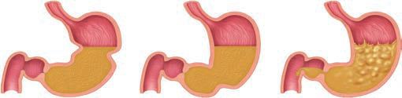<figcaption>Figure fig_ch02_p030_09 (Page 30)</figcaption></figure>
  <figure class="diagram-card" id="fig_ch02_p030_10"><figcaption>Figure fig_ch02_p030_10 (Page 30)</figcaption></figure>
  <figure class="diagram-card" id="fig_ch02_p030_11">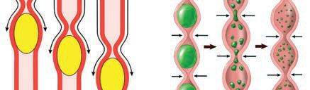<figcaption>Figure fig_ch02_p030_11 (Page 30)</figcaption></figure>
  <figure class="diagram-card" id="fig_ch02_p030_12"><figcaption>Figure fig_ch02_p030_12 (Page 30)</figcaption></figure>
  <div class="page-content">
    <p>zœ“”šȻc IX</p>
    <p>“š§ (Mouth)
ˆƼsÇf—šŽ¡Ĺs}›ăŒ›Úš†cx“ăŽƩš†c–—š›Úųx“ăŽƩÆƂâ›
¡†šÚ§iŒ›†œÅmų›“–—š›Úų“›“› ‚ŽcˆƼs‘ce“¡} Åƣ“c
†›āÇ Œ†Ǡ›šÚ››ĞĬ¢Ƽš Šš—DZv}†›Æ “DZ‚DZš–Œ¡Ĭÿ›c fŦŽv}†
›ÆˆƼsÇÚ§–šŒDZ‚s‘ŒĬ§</p>
    <p>ˆƽ›¡źv}†
g†šŒÆ : Œ†•DZ”ŽœŽĹ›¡nǮ“c
sš~›†DZŒǫˆ„šÅƒcˆƼ›¡źˆcs“xc
†›Åzœ“c
¡£źÄ : ˆƼ§†›Åƣ›ă›Ž›Úųzœ“†ǫ
s
ˆÇƀ§ sDZš“›Ǯ› :ˆƼ›¡źnǮ“cfŦŽ‹šuc
ˆÇ¡ƀųƜ„“š¢šzsssš¡ƀ}ų
ŽÞڝ’sdžš›sÇp¢źšƗšǡ§
¢sš”āÇ(odontoblast cells)mų›“
sš¡ƀ}ų
–›Œźc :ˆƼ›¡† ¢Œš›Æiƀ›ă
†›ÅŝųsšŇDZce}ā›¢šzss</p>
    <p>„ŦŒs}c</p>
    <p>„Ŧu‘c</p>
    <p>„ŦŒžc</p>
    <p>fŒš”c (Stomach)</p>
    <p>¡ˆŽ›ǡšÇ–›–§</p>
    <p>“¢ˆ”›</p>
    <p>¡xs}Æ 6PDOOLQWHဧLQH</p>
    <p>¡ˆŽ›ǡšÇ–›–§</p>
    <p>fŒš”¢ˆ”›s‘¡}”ÞŒš
¡ˆŽ›ǡšÇ–›–§f—šŽ¡Ĺs’Ơ§
ŽžˆĹ›šÚųfŒš”Ĺ›¡ź
e“–š†‹šuŝǫƂ¢‚DZs‚Žc
“¢ˆ”›f—šŽ¡ĹŒ‚›š
–ŒcfŒš”Ĺ›Æ†›†›Åŝų
¡xs}›Æ†}ڝų¡ˆŽ›ǡšÇ–›–§
¡–¡ö¢ź•Ä‚}ā›šũ›s
Ƃ“ÅņāÇf—šŽĹ›¡ź–ĕšŽc
–uŒŒšÚų‚›†cf—šŽ¡Ĺ
„—†Ž–“Œš›sÅŝų‚›†c
–—š›Úų</p>
    <p>¡–¡ö¢ź•Ä</p>
    <p>x›ŅœsŽc 2.3 šũ›s„—†c
y ˆƼ›¡źv}†
y “š§fŒš”c¡xs}Æmų›“›}ā‘›¡ šũ›s„—†c
ˆƼ›¡źf¢ŽšuDZ–cŽäĹ›†§m¡ŦƼšcsšŽDZāÇNJŗ›Úc#
¢šÜŒš›e‹›Œtc†}ś ¢ˆšǡÅ‚ƭššÚ› Ƃ„Å”›ƀ›Úž
30</p>
  </div>
</section><section class="page-section" id="page-31">
  <div class="page-header"><span class="page-number">Page 31</span></div>
  <figure class="diagram-card" id="fig_ch02_p031_01">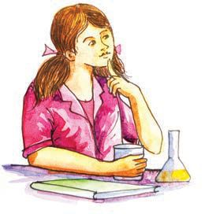<figcaption>Figure fig_ch02_p031_01 (Page 31)</figcaption></figure>
  <figure class="diagram-card" id="fig_ch02_p031_02"><figcaption>Figure fig_ch02_p031_02 (Page 31)</figcaption></figure>
  <figure class="diagram-card" id="fig_ch02_p031_03"><figcaption>Figure fig_ch02_p031_03 (Page 31)</figcaption></figure>
  <figure class="diagram-card" id="fig_ch02_p031_04">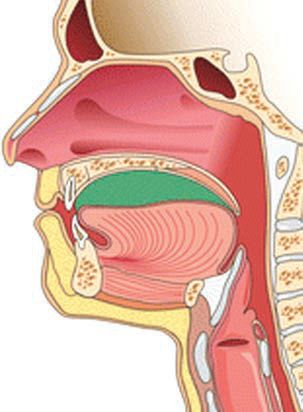<figcaption>Figure fig_ch02_p031_04 (Page 31)</figcaption></figure>
  <figure class="diagram-card" id="fig_ch02_p031_05">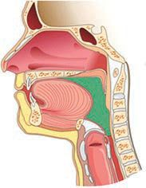<figcaption>Figure fig_ch02_p031_05 (Page 31)</figcaption></figure>
  <figure class="diagram-card" id="fig_ch02_p031_06">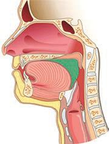<figcaption>Figure fig_ch02_p031_06 (Page 31)</figcaption></figure>
  <figure class="diagram-card" id="fig_ch02_p031_07">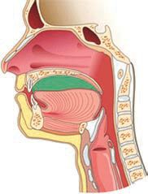<figcaption>Figure fig_ch02_p031_07 (Page 31)</figcaption></figure>
  <figure class="diagram-card" id="fig_ch02_p031_08">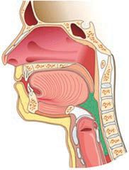<figcaption>Figure fig_ch02_p031_08 (Page 31)</figcaption></figure>
  <figure class="diagram-card" id="fig_ch02_p031_09"><figcaption>Figure fig_ch02_p031_09 (Page 31)</figcaption></figure>
  <figure class="diagram-card" id="fig_ch02_p031_10"><figcaption>Figure fig_ch02_p031_10 (Page 31)</figcaption></figure>
  <figure class="diagram-card" id="fig_ch02_p031_11">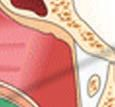<figcaption>Figure fig_ch02_p031_11 (Page 31)</figcaption></figure>
  <figure class="diagram-card" id="fig_ch02_p031_12"><figcaption>Figure fig_ch02_p031_12 (Page 31)</figcaption></figure>
  <figure class="diagram-card" id="fig_ch02_p031_13"><figcaption>Figure fig_ch02_p031_13 (Page 31)</figcaption></figure>
  <figure class="diagram-card" id="fig_ch02_p031_14"><figcaption>Figure fig_ch02_p031_14 (Page 31)</figcaption></figure>
  <figure class="diagram-card" id="fig_ch02_p031_15"><figcaption>Figure fig_ch02_p031_15 (Page 31)</figcaption></figure>
  <figure class="diagram-card" id="fig_ch02_p031_16"><figcaption>Figure fig_ch02_p031_16 (Page 31)</figcaption></figure>
  <figure class="diagram-card" id="fig_ch02_p031_17"><figcaption>Figure fig_ch02_p031_17 (Page 31)</figcaption></figure>
  <figure class="diagram-card" id="fig_ch02_p031_18"><figcaption>Figure fig_ch02_p031_18 (Page 31)</figcaption></figure>
  <div class="page-content">
    <p>zœ“”šȻc IX</p>
    <p>“›’āÆ(Swallowing)</p>
    <p>“›’ā¢ƠšÇf—šŽc
mŦ¡sšĬš§
”Ǵš–†š‘Ĺ›¢Ú§
Ƃ¢“”›ÚšĹ‚§#</p>
    <p>x›ŅœsŽc 2.4 “›”s†c ¡xƪ§ mƀ›
¢øšĞ›–§ ¡x†šÚ§ (Uvula) mų›“¡}
Ǚš†“c Ƃ“Åņ“c‚›Ž›ă›Ě§ “›’
āÆƂ⛍¡ƀǮ› šŽ£s“Ž›Úž</p>
    <p>eĴšÚ§
¡x†šÚ§
‹äc</p>
    <p>÷–†›
mƀ›¢øšĞ›–§</p>
    <p>†šÚ§</p>
    <p>eų†š‘c
”Ǵš–†š‘c</p>
    <p>†šÚ§f—šŽ¡Ĺ
eĴšÚ›¡ź
–—š¢Ĺš¡}
eŒÅś
iŽ‘s‘šÚų</p>
    <p>†šÚ›¡źˆ›Ä‹šuc
f—šŽ¡Ĺmƀ›¢øšĞ›
Ǡ›†§Œs‘›ž¡}
eų†š‘Ĺ›¢Ú§
s}ś“›}ų</p>
    <p>÷–†››¢Ú§
‚Úų
†š–šu—ǴŽ¡Ĺ
¡x†šÚ§
e}Ʃų</p>
    <p>x›ŅœsŽc 2.4 “›’āÆ
f—šŽĹ›¡ź“›’āƍšũ›s„—†cmų›“¡ƀǮ›Œ†Ǡ›
šÚ›¢Ƽš Œ†•DZ¡ź eųˆƒ“c e†ŠŰ‹šuā‘c x›
ŅœsŽc 2.5ƆÆs››Ž›Úųg‚§–žxsāÇچ–Ž›ă§
“›”s†c ¡xƪ§„—†Ƃ⛍›Æq¢Žš‹šuś¡źcˆÿ§
Žš–›s„—†c mų›“¡ƀǮ› †›ā‘¡} s¡ĬĹÆ e“‚Ž›
ƀ›Úž
31</p>
    <p>”Ǵš–†š‘c
Œs‘›¢ÚÅų§
mƀ›¢øšĞ›–§
¡sšĬ§e}Ʃų</p>
    <p>’›Ú
‹äcs Ž›
–š
¢ƠšÇ–c
ڎ¡‚ų§
ź
ˆų‚›¡
sšŽc
mŦš“šc#
s¡ĬŞ</p>
  </div>
</section><section class="page-section" id="page-32">
  <div class="page-header"><span class="page-number">Page 32</span></div>
  <figure class="diagram-card" id="fig_ch02_p032_01">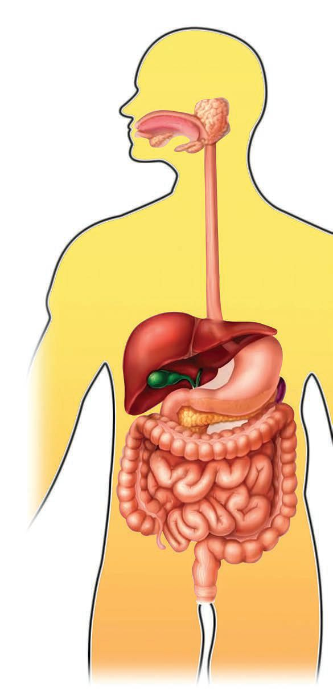<figcaption>Figure fig_ch02_p032_01 (Page 32)</figcaption></figure>
  <figure class="diagram-card" id="fig_ch02_p032_02"><figcaption>Figure fig_ch02_p032_02 (Page 32)</figcaption></figure>
  <div class="page-content">
    <p>zœ“”šȻc IX</p>
    <p>“š§ (Mouth)</p>
    <p>sŽÇ (Liver)</p>
    <p>iŒ›†œÅ÷Ū›iƈš„›ƀ›Úų
iŒ›†œŽ›¡–£“›eŒ›¢
–›¡ź–—š¢Ĺš¡}eųz
ś¡ź„—†cfŽc‹›Úų</p>
    <p>ˆ›ĹŽ–ciƈš„›ƀ›ă§ ˆ›
Ś”Ĺ›Æ–c‹Ž›Úų
ˆ›ĹŽ–Ĺ›Æ mÄ£–Œ
s‘›Ƽ g‚§ ˆsǴš”Ĺ›
¡Ĺ› ¡sš’ƀ›¡† ¡xs
›ss‘šÚsc pH ⌜
sŽ›Úsc¡xƭų</p>
    <p>eų†š‘c(Oesophagus)
¡ˆŽ›ǡšÇ–›–§f—šŽ¡Ĺ
fŒš”Ĺ›¡Ĺ›Úų</p>
    <p>fŒš”c (Stomach)</p>
    <p>ˆšÄ⛍š–§</p>
    <p>fŒš”÷Ū›sÇiƈš„›
ƀ›ÚųfŒš”Ž–Ĺ›¡
£—¢Ħš¢ãš›Úš–›§
f—šŽĹ›¡¢ŽšušÚ¡‘
†”›ƀ›ÚųT,⌜sŽ›Ú
ųg‚›¡mÄ£–Œs‘š
¡ˆƄ›Ä¢ƂšĞœ†s¡‘‹šu›sŒš
›„—›ƀ›Úų›¢ˆ–sÇ
¡sš’ƀ›¡ź„—†¡Ĺ–—š
›Úų¢NjǓc„—†Ž–ā‘
¡}Ƃ“ÅņśÆ†›ų§fŒš
”‹›Ĺ›¡–cŽä›Úų</p>
    <p>(Pancreas)</p>
    <p>ˆšÄ⛍šǮ›s§zDZž–§iÆ
ˆš„›ƀ›Úųg‚§ˆsǴš
”Ĺ›¡Ĺ›„—†¡Ĺ
–—š›Úųg‚›¡
ˆšÄ⛍šǮ›s§eŒ›¢–§
eųz¡Ĺ‹šu›sŒš›
„—›ƀ›Úųğ›Ƅ›Ä
¢Ƃš Ğœ†s¡‘‹šu›sŒš›
„—›ƀ›Úų›¢ˆ–sÇ
¡sš’ƀ›¡†ˆžÅĴŒšc
„—›ƀ›ă§‰šǮ›f–›c
ø›–¢š‘ŒšÚų</p>
    <p>¡xs}Æ 6PDOO,QWHဧLQH
sŽÇˆšÄ⛍š–§mų›“
iÆƀš„›ƀ›Úų„—†Ž–āÇ
¡xs}›¡Ĺ›„—†¡Ĺ
–—š›Úų¡xs}Æ
iƈš„›ƀ›Úųgź£ǡ†Æ
zDZž–›¡“›“› sšÅ¢Šš£—
¢Ħ–sÇ–ÿœÅĴsšÅ¢Šš
£—¢ĦǮs¡‘vv}s
ā‘šøž¢Úš–§Ƌs§¢}š–§
ušs§¢}š–§mų›“šÚų
¢Ƃš Ğ›¢–sÇ¢ƂšĞœ†s¡‘
eŒ›¢†šf–›s‘šÚų
v¢ˆš•sv}sāÇzc
“›ǮšŒ›†sÇ š‚ÚÇmų›
“¡}fu›ŽcŒtDZŒšc
x›ŅœsŽc2.5„—†“DZ“Ǚ
¡xs}›Æ“㧆}ڝų</p>
    <p>“Äs}Æ</p>
    <p>/DUJH,QWHဧLQH</p>
    <p>„—†“›¢ ŒšsšĹ
f—šŽˆ„šÅƒāÇg“›
¡}¡Ĺųe“¢”•›
ڝųz“c“ā‘c
fu›Žc¡xƭų‚§“Ä
s}›Æ“㚁§g“›¡}
ǫx›ŠšÜœŽ›sÇ
“›ǮšŒ›ÄK, B¢sšcƃs§–§
mų›“iƈš„›ƀ›Úų
„—†š“”›Ǐ¡ĹŒš”
ś¢Ú§mśă§Œ„ǴšŽ
śž¡}ˆŦǫų</p>
    <p>y Žš–›s„—†c†}ڝų‹šuāÇ
y “›“› ‹šuā‘›Æ“ăǫeųzc¢ƂšĞœÄ¡sš’ƀ§mų›“¡}„—†c
y „—†Ĺ›ÆsŽÇˆšÄ⛍š–§mų›“¡}ˆÿ§
y ¡xs}›¡c“Äs}›¡cfu›Žc
y ¢ˆš•sā‘ce“¡}vv}sā‘c
32</p>
  </div>
</section><section class="page-section" id="page-33">
  <div class="page-header"><span class="page-number">Page 33</span></div>
  <figure class="diagram-card" id="fig_ch02_p033_01">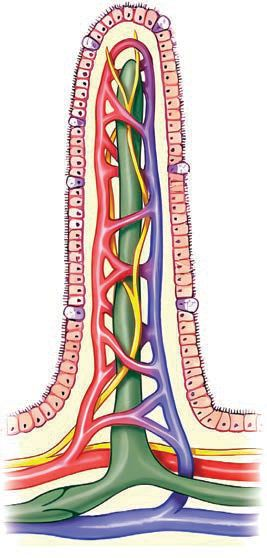<figcaption>Figure fig_ch02_p033_01 (Page 33)</figcaption></figure>
  <figure class="diagram-card" id="fig_ch02_p033_02">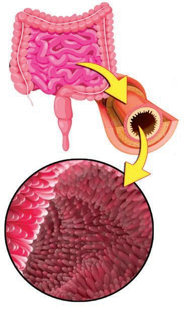<figcaption>Figure fig_ch02_p033_02 (Page 33)</figcaption></figure>
  <figure class="diagram-card" id="fig_ch02_p033_03"><figcaption>Figure fig_ch02_p033_03 (Page 33)</figcaption></figure>
  <figure class="diagram-card" id="fig_ch02_p033_04">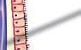<figcaption>Figure fig_ch02_p033_04 (Page 33)</figcaption></figure>
  <div class="page-content">
    <p>zœ“”šȻc IX</p>
    <p>Œ†•DZ†›Æ ˆžÅĴŒšc ¢sš”Šš—DZ„—†Œš§ †}ڝų‚§
¡xs}›Æ “㧠„—†c ˆžÅĴŒš“sc vv}sā‘¡}
fu›Žc ŒtDZŒšc †}ڝsc ¡xƭų ¡xs}›Æ
g‚›†š“”DZŒšv}†šˆŽŒšƂ¢‚DZs‚sÇm¡ŦƼšŒš§#
x“¡}†Æs›“›“Žc“›”s†c ¡xƪ§†›uŒ†āÇ
ŽžˆœsŽ›Úž</p>
    <p>v¢ˆš•sā‘¡}fu›Žc
fŒœǮ¢š‘c †œ‘Œǫ‚c ŽĬŽ¡–źœŒœǮ¢š‘c “DZš–
Œǫ‚c †œĬxŽĬ‚c ¢ˆ”œ†›Åƣ›‚“Œš§ ¡x
s}Æg‚›¡źf„DZ‹šuŒš§ˆsǴš”c¡xs}›¡ź
–“›¢”•v}†„—†Ĺ›†cfu›ŽƂ⛍Ʃcn¡
–—šsŒš§iNj›Ĺ››}†œ‘c“›ŽÆ¢ˆšǫ‹šu
āÇsš¡ƀ}ųg“š§“›Ƽ–sÇg“¡xs}
›¡fu›ŽƂ‚“›ǘœÅĴce¢†scŒ}ā§“Å ›ƀ›
ڝų “›Ƽ–›¡ź v}† fu›ŽƂ⛍Ʃ§ mŅŒšŅc
e†¢šzDZŒš§#x›ŅœsŽc 2.6–žxsāÇچ–Ž›ă§
“›”s†c ¡xƪ§s›ƀ§‚ƭššÚž</p>
    <p>“›ƽ–§(Villus)</p>
    <p>ST-267-3-BIOLOGY (M)-9-VOL-1</p>
    <p>pǯ†›Žmƀ›Ĺœ›Æ¢sš”āÇ
¢ˆš•sšu›ŽĹ›†ǫƂšƒŒ›sƂ‚c
ŽÞ¢šŒ›ssÇ
pŽ Œ†œ”št“›Ƽ–›¢Ú§ Ƃ¢“”›ă§ ¢šŒ›ss¡‘
Žžˆ¡ƀ}Ĺų¢šŒ›ssÇsž}›¢ăÅų§–›Žš›
ˆĹ¢ˆšsųøž¢Úš–§Ƌs§¢}š–§ušs§¢}š–§
eŒ›¢†šf–›sÇmų›“¡fu›Žc ¡xƭų</p>
    <p>šÜ›Æ
›c‰§“š—›¡}”štg‚›¡›c‰›¢Ú§‰šǮ›
f–›§ø›–¢šÇmų›“¡fu›Žc ¡xƭų
x›ŅœsŽc 2.6 “›Ƽ–›¡źv}†
33</p>
  </div>
</section><section class="page-section" id="page-34">
  <div class="page-header"><span class="page-number">Page 34</span></div>
  <figure class="diagram-card" id="fig_ch02_p034_01"><figcaption>Figure fig_ch02_p034_01 (Page 34)</figcaption></figure>
  <figure class="diagram-card" id="fig_ch02_p034_02"><figcaption>Figure fig_ch02_p034_02 (Page 34)</figcaption></figure>
  <figure class="diagram-card" id="fig_ch02_p034_03"><figcaption>Figure fig_ch02_p034_03 (Page 34)</figcaption></figure>
  <figure class="diagram-card" id="fig_ch02_p034_04"><figcaption>Figure fig_ch02_p034_04 (Page 34)</figcaption></figure>
  <figure class="diagram-card" id="fig_ch02_p034_05"><figcaption>Figure fig_ch02_p034_05 (Page 34)</figcaption></figure>
  <figure class="diagram-card" id="fig_ch02_p034_06"><figcaption>Figure fig_ch02_p034_06 (Page 34)</figcaption></figure>
  <figure class="diagram-card" id="fig_ch02_p034_07"><figcaption>Figure fig_ch02_p034_07 (Page 34)</figcaption></figure>
  <figure class="diagram-card" id="fig_ch02_p034_08"><figcaption>Figure fig_ch02_p034_08 (Page 34)</figcaption></figure>
  <figure class="diagram-card" id="fig_ch02_p034_09"><figcaption>Figure fig_ch02_p034_09 (Page 34)</figcaption></figure>
  <figure class="diagram-card" id="fig_ch02_p034_10"><figcaption>Figure fig_ch02_p034_10 (Page 34)</figcaption></figure>
  <figure class="diagram-card" id="fig_ch02_p034_11"><figcaption>Figure fig_ch02_p034_11 (Page 34)</figcaption></figure>
  <figure class="diagram-card" id="fig_ch02_p034_12"><figcaption>Figure fig_ch02_p034_12 (Page 34)</figcaption></figure>
  <figure class="diagram-card" id="fig_ch02_p034_13"><figcaption>Figure fig_ch02_p034_13 (Page 34)</figcaption></figure>
  <figure class="diagram-card" id="fig_ch02_p034_14"><figcaption>Figure fig_ch02_p034_14 (Page 34)</figcaption></figure>
  <figure class="diagram-card" id="fig_ch02_p034_15"><figcaption>Figure fig_ch02_p034_15 (Page 34)</figcaption></figure>
  <figure class="diagram-card" id="fig_ch02_p034_16"><figcaption>Figure fig_ch02_p034_16 (Page 34)</figcaption></figure>
  <figure class="diagram-card" id="fig_ch02_p034_17"><figcaption>Figure fig_ch02_p034_17 (Page 34)</figcaption></figure>
  <figure class="diagram-card" id="fig_ch02_p034_18"><figcaption>Figure fig_ch02_p034_18 (Page 34)</figcaption></figure>
  <figure class="diagram-card" id="fig_ch02_p034_19"><figcaption>Figure fig_ch02_p034_19 (Page 34)</figcaption></figure>
  <div class="page-content">
    <p>zœ“”šȻc IX</p>
    <p>y “›Ƽ–cfu›ŽƂ‚“›ǘœÅ“c
y šÜ›cfu›Ž“c
y ŽÞ¢šŒ›ss‘cfu›Ž“c
¢ˆš•sv}sā¡‘ “›Ƽ–›¡ ŽÞś¢Úc ›c‰›¢
ڝŒš¢Ƽš fu›Žc ¡xƭų‚§ ¢ˆš•sv}sā‘¡}
–c“—†Ĺ›†§ ŽÞc ›c‰§ mų›“¡} v}† mƂsšŽc
–—š›Úųmų§ˆŽ›¢”š ›Úšc</p>
    <p>ŽÞ“c›c‰c(Blood and Lymph)
ŽÞś¡ “›“›  v}sāÇ e“¡} Åƣc mų›“
†›āÇڏ›šŒ¢ƼšŽÞv}sā‘Œš›ŠŰ¡ƀĞx›ŅœsŽc
2.7ˆžÅśšÚž</p>
    <p>ŽÞc (Blood)
55%</p>
    <p>ƃš–§Œ (Plasma)</p>
    <p>45%</p>
    <p>ŽÞ¢sš”āÇ (Blood Cells)
x“ųŽÞ¢sš”āÇ</p>
    <p>zc</p>
    <p>(Red blood cells)</p>
    <p>y </p>
    <p>¢ƂšĞœ†sÇ</p>
    <p>¡“‘ĹŽÞ¢sš”āÇ</p>
    <p>fƊŒ›Ä</p>
    <p>(White blood cells)</p>
    <p>¢øšŠ›Ä</p>
    <p>y </p>
    <p>£‰Ɩ›¢†šzÄ
¢ƃǮ§¡Ǯ§(Platelets)</p>
    <p>ŒǮ§v}sāÇ</p>
    <p>y ŽÞcsЈ›}›Úų‚›†§
–—š›Úų</p>
    <p>
ƃš–§Œ›¡
“›“›  
‘¡}
¢ƂšĞœ†s
Åƣc
s¡ĬŞ</p>
    <p>x›ŅœsŽc 2.7 ŽÞś¡v}sāÇ
Œ†•DZ†›Æ ŽÞ“c ¢sš”“c ‚ƣ›Æ ˆ„šÅƒā‘¡}
“›†›Œc †}ڝų‚§ mƂsšŽŒš§# ˆ„šÅƒ£sŒšǮśÆ
¢sš”āÇڛ}›ǫŝ“Ĺ›¡ź Ƃš š†DZc†›āÇڏ›šŒ¢Ƽš
g‚§mā¡†š§ Žžˆ¡ƀ}ų‚§#
x›ŅœsŽc 2.8 –žxsāÇچ–Ž›ă§ “›”s†c ¡xƪ§
†›uŒ†āÇ¢Žt¡ƀ}Ĺž
34</p>
  </div>
</section><section class="page-section" id="page-35">
  <div class="page-header"><span class="page-number">Page 35</span></div>
  <figure class="diagram-card" id="fig_ch02_p035_01"><figcaption>Figure fig_ch02_p035_01 (Page 35)</figcaption></figure>
  <figure class="diagram-card" id="fig_ch02_p035_02">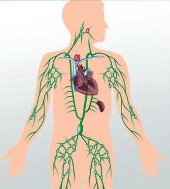<figcaption>Figure fig_ch02_p035_02 (Page 35)</figcaption></figure>
  <figure class="diagram-card" id="fig_ch02_p035_03"><figcaption>Figure fig_ch02_p035_03 (Page 35)</figcaption></figure>
  <figure class="diagram-card" id="fig_ch02_p035_04">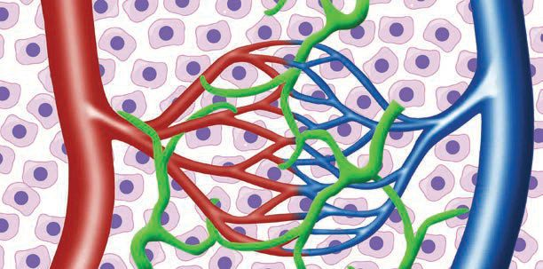<figcaption>Figure fig_ch02_p035_04 (Page 35)</figcaption></figure>
  <figure class="diagram-card" id="fig_ch02_p035_05"><figcaption>Figure fig_ch02_p035_05 (Page 35)</figcaption></figure>
  <figure class="diagram-card" id="fig_ch02_p035_06"><figcaption>Figure fig_ch02_p035_06 (Page 35)</figcaption></figure>
  <figure class="diagram-card" id="fig_ch02_p035_07"><figcaption>Figure fig_ch02_p035_07 (Page 35)</figcaption></figure>
  <figure class="diagram-card" id="fig_ch02_p035_08"><figcaption>Figure fig_ch02_p035_08 (Page 35)</figcaption></figure>
  <figure class="diagram-card" id="fig_ch02_p035_09"><figcaption>Figure fig_ch02_p035_09 (Page 35)</figcaption></figure>
  <figure class="diagram-card" id="fig_ch02_p035_10"><figcaption>Figure fig_ch02_p035_10 (Page 35)</figcaption></figure>
  <figure class="diagram-card" id="fig_ch02_p035_11"><figcaption>Figure fig_ch02_p035_11 (Page 35)</figcaption></figure>
  <div class="page-content">
    <p>zœ“”šȻc IX</p>
    <p>Œ†›</p>
    <p>–›Ž</p>
    <p>¢šŒ›s</p>
    <p>›c‰§“š—›</p>
    <p>x›ŅœsŽc 2.8}›•DZŝ“Ĺ›¡ź ŽžˆœsŽc</p>
    <p>}›•Dzŝ“c 7LVVXHÀXLG</p>
    <p>›c‰§ (Lymph)</p>
    <p>¢šŒ›ss‘›ž¡}ŽÞc Ƃ“—›Ú¢ƠšÇ
}›•DZŝ“Ĺ›¡źpŽ ‹šuc ›c‰§
¢šŒ›sš‹›Ĺ››¡ ¡x–•›Žā‘›ž¡}
¢šŒ›ss‘›¢Ú§ Ƃ¢“”›Úų
ŽÞś¡ ŝš“s‹šuc ¢sš”āÇڛ}
g‚š§›c‰§›c‰›ž¡}š§
›¢Ú§j››āųhŝš“sŒš§
¡sš’ƀ›¡ź„—†‰ŒšĬšsų
}›•DZŝ“c¢sš”ā‘c }›•DZŝ““c
vv}sā‘c ¡sš’ƀ›Æ›Úų
‚ƣ›š§ˆ„šÅƒ–c“—†c†}ڝų‚§
“›ǮšŒ›†s‘c–c“—†c
¡xƭ¡ƀ}ų‚§
y
y
y
y</p>
    <p>}›•DZŝ“Ĺ›¡źŽžˆœsŽc
ˆ„šÅƒ“›†›ŒĹ›Æ}›•DZŝ“Ĺ›¡źˆÿ§
›c‰›¡źŽžˆœsŽc
ˆ„šÅƒ–c“—†Ĺ›Æ›c‰›¡źˆÿ§</p>
    <p>›c‰§“Dz“ǚ (Lymphatic system)
›c‰§›c‰§“š—›sÇ
›c‰§ ¢†šsÇǜ§‘œÄeǙ›Œċ
£‚Œ–§÷Ū›mų›“iÇ¡ƀ}ų‚š§
›c‰§ “DZ“Ǚ›c‰›Æx“ų
ŽÞ¢sš”ā¢‘š“›¢ƂšĞœÄ
‚ŶšŅs¢‘šsš¡ƀ}ų›Ƽ›c‰§
“DZ“Ǚ ¢ŽšuƂ‚›¢Žš śÆ
ŒtDZˆÿ“—›Úų
ˆ„šÅƒ–c“—†Ĺ›ÆŽÞś¡źc›c‰›¡źc Ƃš š†DZc
Œ†–›š¢Ƽš “›Ƽ–›¢Ú Ƃ¢“”›ă Œ†œ”št ˆ›Ž›Ě§
¢šŒ›ss‘šc e“ sž}›¢ăÅų§ ¡x–›Žs‘šc ˆ›ųœ}§
–›ŽšcŒšųĬ¢Ƽš”ŽœŽĹ›¡Ơš}cŽÞڝ’s¡‘
ˆ„šÅƒ£sŒšǮś†š› gŎśš¢š “›†DZ–›ă›Ğǫ‚§
mų§s¡ĬŞ
35</p>
    <p>ڛ}
¢sš”āÇ 
›ǫǙ“
ŧ }›•DZŝ “§
‘
ś¡źe ƀ}
¡
⌜sŽ›Ú †#
ų¡‚ā¡
s¡ĬŞ</p>
    <p>›c‰§“š—›
ǜ§‘œÄ
›c‰§ ¢†š§</p>
  </div>
</section><section class="page-section" id="page-36">
  <div class="page-header"><span class="page-number">Page 36</span></div>
  <figure class="diagram-card" id="fig_ch02_p036_01"><figcaption>Figure fig_ch02_p036_01 (Page 36)</figcaption></figure>
  <figure class="diagram-card" id="fig_ch02_p036_02"><figcaption>Figure fig_ch02_p036_02 (Page 36)</figcaption></figure>
  <figure class="diagram-card" id="fig_ch02_p036_03">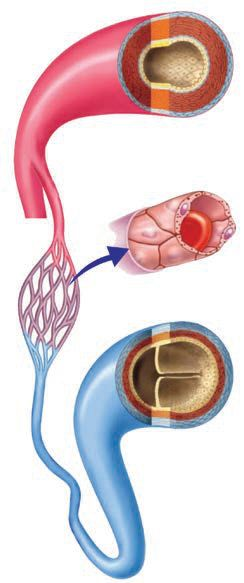<figcaption>Figure fig_ch02_p036_03 (Page 36)</figcaption></figure>
  <figure class="diagram-card" id="fig_ch02_p036_04">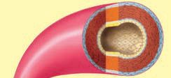<figcaption>Figure fig_ch02_p036_04 (Page 36)</figcaption></figure>
  <figure class="diagram-card" id="fig_ch02_p036_05">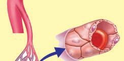<figcaption>Figure fig_ch02_p036_05 (Page 36)</figcaption></figure>
  <figure class="diagram-card" id="fig_ch02_p036_06">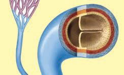<figcaption>Figure fig_ch02_p036_06 (Page 36)</figcaption></figure>
  <div class="page-content">
    <p>zœ“”šȻc IX</p>
    <p>x›ŅœsŽc 2.9 –žxsāÇچ–Ž›ă§ “›”s†c ¡xƪ§
†›uŒ†āÇ¢Žt¡ƀ}Ĺž</p>
    <p>Œ†›</p>
    <p>(Artery)</p>
    <p>¢šŒ›s</p>
    <p>(Capillary)</p>
    <p>–›Ž</p>
    <p>(Vein)</p>
    <p>sĞ›sž}›gšǘ›s‚ǫ‹›Ĺ›ŽÞc
iÅųŒÅ„Ĺ›c ¢“uścp’sų
Ǣ„Ĺ›Æ†›ųc ŽÞc“—›Úų
pǮ†›Ž¢sš”āÇŒšŅŒǫ‹›Ĺ›‹›Ĺ››Æ
e‚›–žä§Œ–•›Žā‘Ĭ§ŽÞc
sĚŒÅ„Ĺ›c ¢“uścp’sų
sĞ›sĚ‹›Ĺ›ŽÞcsĚŒÅ„Ĺ›c
¢“uścp’sų“šÆ“sÇ
sš¡ƀ}ųǢ„Ĺ›¢Ú§ ŽÞc
“—›Úų</p>
    <p>x›ŅœsŽc 2.9“›“› ‚Žc ŽÞڝ’sÇ</p>
    <p>y
Œ†›–›Ž¢šŒ›smų›“¡}‹›Ĺ›¡}Ƃ¢‚DZs‚
y ŽÞڝ’s‘c ŽÞƂ“š—Ĺ›¡ź„›”c
y ŽÞƂ“š—Ĺ›¡ź¢“u‚cŒÅ„“c
y “šÆ“s‘¡}–šų› DZc</p>
    <p>¢ˆšÅĞÆ–›ŽsÇ
(Portal Veins)
x›–›ŽsÇǢ„Ĺ›¢Ú§ ¢†Ž›Ğ§ŽÞc
mśڝų‚›†ˆsŽce““ā‘›Æ
†›ų§e““ā‘›¢Ú§ ŽÞ¡Ĺ
“—›ÚųgŎc–›Žs‘š§ ¢ˆšÅĞÆ
–›ŽsÇ¡xs}›Æ†›ų§ ŽÞś¢Ú§
fu›Žc ¡xƭ¡ƀ}ų¢ˆš•sv}sā¡‘
sŽ‘›¡Ĺ›Úų¡—ƀšǮ›s§ ¢ˆšÅĞÆ
–›Žg‚›†§pŽi„š—ŽŒš§</p>
    <p>36</p>
    <p>¡xs}›Æ †›ųc  ŽÞś¢Úc
›c‰›¢Úc fu›Žc ¡xƭ¡ƀĞ
¢ˆš•sv}sāÇ ”ŽœŽĹ›¡ź
“›“›  ‹šuā‘›Æ  mś¢ăŽų‚§
mƂsšŽŒš›Ž›Úc# †›āÇ Œ†Ǡ›š
ڛŒžų‚Žc ŽÞڝ’s‘cg‚›Æ
iÇ¡ƀ}ų¢Ĭš# x›ŅœsŽc 2.10
“›”s†c ¡xƪ§–žx†sÇiˆ¢šu›ă§
¢ƌšxšÅЧ ˆžÅśšÚ› †›uŒ†c
m’‚ž</p>
  </div>
</section><section class="page-section" id="page-37">
  <div class="page-header"><span class="page-number">Page 37</span></div>
  <figure class="diagram-card" id="fig_ch02_p037_01">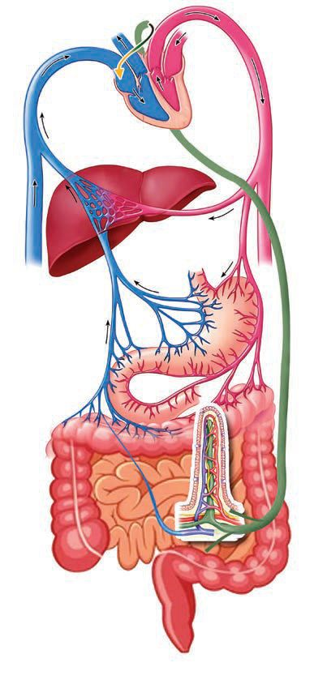<figcaption>Figure fig_ch02_p037_01 (Page 37)</figcaption></figure>
  <figure class="diagram-card" id="fig_ch02_p037_02"><figcaption>Figure fig_ch02_p037_02 (Page 37)</figcaption></figure>
  <figure class="diagram-card" id="fig_ch02_p037_03"><figcaption>Figure fig_ch02_p037_03 (Page 37)</figcaption></figure>
  <figure class="diagram-card" id="fig_ch02_p037_04"><figcaption>Figure fig_ch02_p037_04 (Page 37)</figcaption></figure>
  <div class="page-content">
    <p>zœ“”šȻc IX
Œ—š–›Ž
sŽ‘›Æ†›ųc
¢ˆš•sv}sā‘}ā›
ŽÞc ¡—ƀšǮ›s§–›Ž“’›
Ǣ„Ĺ›¡Ĺų</p>
    <p>¡x›c‰§
“š—›s‘›Æ†›ų
“››c‰§
“š—›s‘›ž¡}
Ǣ„Ĺ›¡Ĺų</p>
    <p>¡—ˆšǮ›s§–›Ž</p>
    <p>¢ˆšÅĞƖ›Ž
¢ˆš•sv}sāÇ
“›Ƽ–›¡
ŽÞ¢šŒ›ss‘›Æ†›ų§
¢ˆšÅĞƖ›Ž“’›
sŽ‘›¡Ĺų
¢ˆš•sv}sāÇ
“›Ƽ–›¡
šÜ››ž¡}
¡x›c‰§
“š—›s‘›¢Ú§</p>
    <p>x›ŅœsŽc2.10 ¢ˆš•sv}sā‘¡}–c“—†c</p>
    <p>
øž¢Úš–§</p>
    <p>“›Ƽ–›¡
ŽÞ¢šŒ›s</p>
    <p>sŽÇ</p>
    <p>}s
¢ˆš•sv ś

āÇǢ„ ›†
‚
¡Ĺų 
›¡
ŒƠ§sŽ‘ §
‚
ŝų
mŦ›†§#
s¡ĬŞ</p>
    <p>‰šǮ›f–›§</p>
    <p>Œ—š–›Ž
Ǣ„c
”ŽœŽĹ›¡ź
“›“› ‹šuāÇ
37</p>
    <p>–žx†sÇ
¢ˆšÅĞƖ›Ž
“›Ƽ–›¡šÜ›Æ
eŒ›¢†šf–›§
ø›–¢šÇ
¡—ˆšǮ›s§–›Ž
›c‰§“š—›</p>
  </div>
</section><section class="page-section" id="page-38">
  <div class="page-header"><span class="page-number">Page 38</span></div>
  <figure class="diagram-card" id="fig_ch02_p038_01">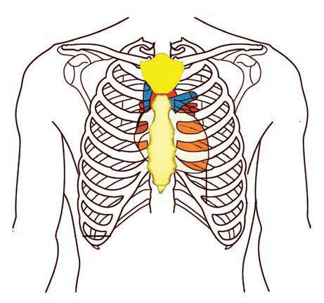<figcaption>Figure fig_ch02_p038_01 (Page 38)</figcaption></figure>
  <figure class="diagram-card" id="fig_ch02_p038_02">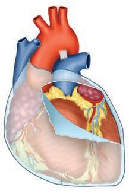<figcaption>Figure fig_ch02_p038_02 (Page 38)</figcaption></figure>
  <figure class="diagram-card" id="fig_ch02_p038_03"><figcaption>Figure fig_ch02_p038_03 (Page 38)</figcaption></figure>
  <div class="page-content">
    <p>zœ“”šȻc IX</p>
    <p>ŽÞc ”ŽœŽĹ›¡ź “›“›  ‹šuā‘›¢Ú§ ‚}Å㍚› p’sų‚›†§ ŽÞڝ’sÇ
ŒšŅcŒ‚›šs¢Œš#
ŽÞ¡Ĺe†–DZž‚c”ŽœŽĹ›¡źmƼš‹šu¢Ĺڝcmśځ¡Œÿ›ÆpŽˆƠ›¡ź
f“”DZŒĬ§ Ǣ„Œš§ f Åƣc †›Å“—›Úų‚§ Ǣ„Ĺ›¡ź v}† g‚›†§
mŅ¢Ĺš‘ce†¢šzDZŒš¡ų§†ŒÚ§ˆŽ›¢”š ›Úšc</p>
    <p>ǣ„c (Heart)
rŽ–š”Ĺ›Æ eƹc g}¢ĹšĞ§ xŽ›Ě§ Ǚ›‚›¡xƭų ¢ˆ”› †›Åƣ›‚Œš pŽ
e““Œš§ Ǣ„c x›ŅœsŽc 2.11 –žxsāÇچ–Ž›ă§ “›”s†c ¡xƪ§
Ǣ„Ĺ›¡źǙš†c–cŽäcmų›“¡ƀǮ› šŽ£s“Ž›Úž</p>
    <p>¢ǡŁc
“šŽ›¡Ƽ§
†¡ĞƼ§</p>
    <p>¡ˆŽ›sšÅ›c
Ǣ„¡Ĺ ¡ˆš‚›Ě›Ž›Úų
gŽĞǘŽŒš§ ¡ˆŽ›sšÅ›ch
ǘŽāÇڛ}›¡ ¡ˆŽ›sšÅ›Æ
ŝ“cǢ„¡ĹŠš—DZä‚ā‘›Æ
†›ų§–cŽä›Úsc
Ǣ„ǜŭ†cŒžcǘŽāÇڛ}›Æ
iĬš¢Úš“ųvŕc
sƩsc ¡xƭų
x›ŅœsŽc 2.11Ǣ„Ĺ›¡źǙš†“c–cŽä“c
y</p>
    <p>Ǣ„Ĺ›¡źǙš†c</p>
    <p>y</p>
    <p>Ǣ„Ĺ›¡ź–cŽäc</p>
    <p>y</p>
    <p>¡ˆŽ›sšÅ›Æŝ“Ĺ›¡ź Åƣc</p>
    <p>Ǣ„Ĺ›¡ź Ƃ“Åņc ¢Šš DZ¡ƀ}ų‚›†š› e‚›¡ź
v}†¡ƀǮ›sž}‚ÆŒ†Ǡ›š¢ÚĬ‚Ĭ§
x›ŅœsŽc 2.12“›”s†c ¡xƪ§–žxsā‘¡}e}›Ǚš†Ĺ›Æ
xÅă¡xƪ§†›uŒ†āÇŽžˆœsŽ›Úž
38</p>
  </div>
</section><section class="page-section" id="page-39">
  <div class="page-header"><span class="page-number">Page 39</span></div>
  <figure class="diagram-card" id="fig_ch02_p039_01">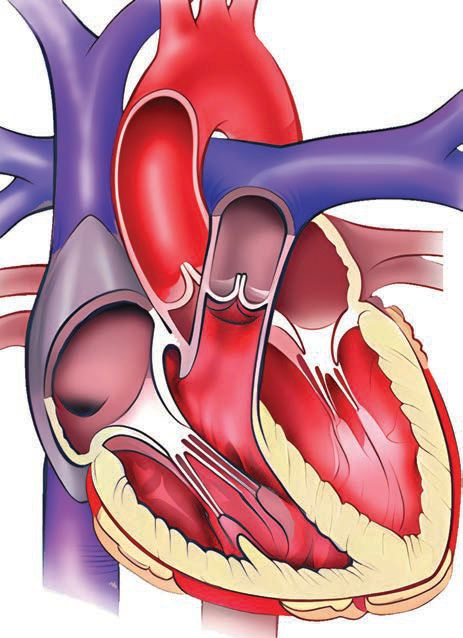<figcaption>Figure fig_ch02_p039_01 (Page 39)</figcaption></figure>
  <figure class="diagram-card" id="fig_ch02_p039_02"><figcaption>Figure fig_ch02_p039_02 (Page 39)</figcaption></figure>
  <div class="page-content">
    <p>zœ“”šȻc IX</p>
    <p>Œ—š Œ†›
(Aorta)</p>
    <p>jÅ ǴŒ—š–›Ž
(Superior Vena cava)</p>
    <p>”Ǵš–¢sš” Œ†›
(Pulmonary Artery)</p>
    <p>”Ǵš–¢sš”–›Ž</p>
    <p>¡–Œ›žšÅ“šÆ“§
(Semilunar Valve)</p>
    <p>(Pulmonary Vein)</p>
    <p>B</p>
    <p>£Šsǜ›§“šÆ“§</p>
    <p>A</p>
    <p>(Bicuspid Valve)</p>
    <p>£ğsǜ›§“šÆ“§
(Triscuspid Valve)</p>
    <p>D</p>
    <p>C
e¢ šŒ—š–›Ž
(Inferior Venacava)</p>
    <p>–žx†</p>
    <p>Ǣ„esÇ
A“‚nğ›c
C“‚¡“Äğ›Ú›Ç</p>
    <p>Bg}‚nğ›c
Dg}‚¡“Äğ›Ú›Ç</p>
    <p>x›ŅœsŽc2.12 Ǣ„Ĺ›źv}†
y Ǣ„Ĺ›¢Ú§ŽÞcmśڝųs’s‘c
e“mś¢ăŽųes‘c
y Ǣ„Ĺ›Æ†›ų§ŽÞcˆ¢ĹÚ§“—›Úų
s’s‘ce“fŽc‹›Úųes‘c
y Ǣ„“šÆ“sÇǙš†c Åƣc
Ǣ„cmƂsšŽŒš§ Ƃ“Åśڝų‚§#x›ŅœsŽc 2.13 –žx†
sÇچ–Ž›ă§ˆžÅśšÚ›†›ā‘¡}s¡ĬĹÆe“‚Ž›ƀ›Úž</p>
    <p>39</p>
  </div>
</section><section class="page-section" id="page-40">
  <div class="page-header"><span class="page-number">Page 40</span></div>
  <figure class="diagram-card" id="fig_ch02_p040_01">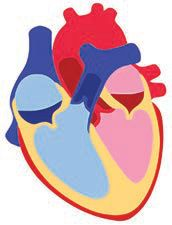<figcaption>Figure fig_ch02_p040_01 (Page 40)</figcaption></figure>
  <figure class="diagram-card" id="fig_ch02_p040_02">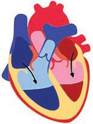<figcaption>Figure fig_ch02_p040_02 (Page 40)</figcaption></figure>
  <figure class="diagram-card" id="fig_ch02_p040_03">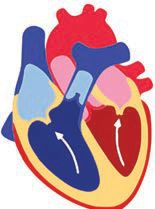<figcaption>Figure fig_ch02_p040_03 (Page 40)</figcaption></figure>
  <figure class="diagram-card" id="fig_ch02_p040_04">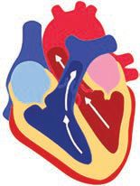<figcaption>Figure fig_ch02_p040_04 (Page 40)</figcaption></figure>
  <figure class="diagram-card" id="fig_ch02_p040_05">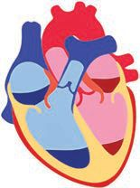<figcaption>Figure fig_ch02_p040_05 (Page 40)</figcaption></figure>
  <div class="page-content">
    <p>zœ“”šȻc IX
”ŽœŽĹ›¡ź“›“› 
‹šuā‘›Æ†›ųǫŽÞc
ƽÚsÇŒš›†DZā¡‘
eŽ›ăŒšǮ›‚›†§
¢”•Œǫ‚csšÅŠÃ
£qs§£–›¡źc
¢ˆš•sā‘¡}ce‘“§
sž}›‚c</p>
    <p>”Ǵš–¢sš”Ĺ›Æ†›ųǫ
ŽÞc(¢ˆš•sā‘¡}c
qs§–›z¡źce‘“§
sž}›‚§</p>
    <p>nğ›ā‘¡}–¢ÿšxc nğ›Æ–›¢ǢšÇ 
(Atrial Systole)
“¢Ĺmğ›Ĺ›Æ†›ų§ŽÞcƂ¢“”›Úųe

g}¢Ĺmğ›Ĺ›Æ†›ų§ŽÞcƂ¢“”›Úųe
</p>
    <p>¡“Äğ›Ú›‘s‘¡}–¢ÿšxc
¡“Äğ›ÚšÅ–›¢ǢšÇ (Ventricular systole)
“‚§¡“Äğ›Ú›‘›Æ†›ų§ŽÞcƂ¢“”›ÚųŽÞڝ’Æ

g}‚§¡“Äğ›Ú›‘›Æ†›ų§ŽÞcƂ¢“”›ÚųŽÞڝ’Æ

¡“Äğ›Ú›‘sÇ–¢ÿšx›Ú¢ƠšÇŽÞc‚›Ž›¡snğ›ā‘›¢Ú§
Ƃ¢“”›Ú¢Œš#mŦ¡sšĬ§#

¡“Äğ›Ú›‘sÇ –¢ÿšx›Ú¢ƠšÇ “‚ ¡“Äğ›Ú›‘›Æ †›ųc
ŽÞc ”Ǵš–¢sš” Œ†› (Pulmonary artery) “’› ”Ǵš–¢sš”ā‘›
¢Úc g}‚ ¡“Äğ›Ú›‘›Æ †›ųc ŽÞc Œ—š Œ†› (Aorta) “’›
”ŽœŽĹ›¡ź“›“› ‹šuā‘›¢Úc–c“—†c¡xƭ¡ƀ}ų
ŽÞc”Ǵš–¢sš”ā‘›¢Ú§Ƃ¢“”›Úų‚§mŦ›†š›Ž›Úšc#
</p>
    <p>nğ›ā‘¡}c¡“Äğ›Ú›‘s‘¡}c
ˆžÅ“ǚ›‚›Ƃšˆ›ÚÆ ¢zš›ź§¢ǢšÇ </p>
    <p>(Joint diastole)
¡“Äğ›Ú›‘s‘¡} –¢ÿšx¡Ĺŝ}Åų§ Ǣ„Ĺ›Æ †›ų§
ŽÞڝ’s‘›¢Ú§ ŽÞc p’s›¢”•c †š es‘c pų›ă§
ˆžÅ“Ǚ›‚›Ƃšˆ›Úų
Ǣ„ esÇ ˆžÅ“Ǚ›‚› Ƃšˆ›Ú¢ƠšÇ Œ—š–›Žs‘›¡c
”Ǵš–¢sš”–›Žs‘›¡cŽÞcp’s›¡ĹųǢ„esÇ
</p>
    <p>x›ŅœsŽc2.13
h Ƃ“ÅņāÇ xšâ›sŒš› f“Åśڝs “’› ŽÞc
Ǣ„Ĺ›¡źƂ“Åņc ”ŽœŽĹ›}†œ‘c‚}Å㍚›ˆƠ§¡xƭ¡ƀ}ų
40</p>
  </div>
</section><section class="page-section" id="page-41">
  <div class="page-header"><span class="page-number">Page 41</span></div>
  <figure class="diagram-card" id="fig_ch02_p041_01">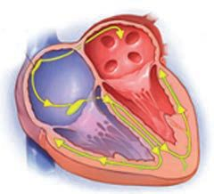<figcaption>Figure fig_ch02_p041_01 (Page 41)</figcaption></figure>
  <figure class="diagram-card" id="fig_ch02_p041_02"><figcaption>Figure fig_ch02_p041_02 (Page 41)</figcaption></figure>
  <figure class="diagram-card" id="fig_ch02_p041_03"><figcaption>Figure fig_ch02_p041_03 (Page 41)</figcaption></figure>
  <figure class="diagram-card" id="fig_ch02_p041_04"><figcaption>Figure fig_ch02_p041_04 (Page 41)</figcaption></figure>
  <figure class="diagram-card" id="fig_ch02_p041_05"><figcaption>Figure fig_ch02_p041_05 (Page 41)</figcaption></figure>
  <figure class="diagram-card" id="fig_ch02_p041_06"><figcaption>Figure fig_ch02_p041_06 (Page 41)</figcaption></figure>
  <figure class="diagram-card" id="fig_ch02_p041_07"><figcaption>Figure fig_ch02_p041_07 (Page 41)</figcaption></figure>
  <figure class="diagram-card" id="fig_ch02_p041_08"><figcaption>Figure fig_ch02_p041_08 (Page 41)</figcaption></figure>
  <figure class="diagram-card" id="fig_ch02_p041_09"><figcaption>Figure fig_ch02_p041_09 (Page 41)</figcaption></figure>
  <figure class="diagram-card" id="fig_ch02_p041_10"><figcaption>Figure fig_ch02_p041_10 (Page 41)</figcaption></figure>
  <figure class="diagram-card" id="fig_ch02_p041_11"><figcaption>Figure fig_ch02_p041_11 (Page 41)</figcaption></figure>
  <figure class="diagram-card" id="fig_ch02_p041_12"><figcaption>Figure fig_ch02_p041_12 (Page 41)</figcaption></figure>
  <figure class="diagram-card" id="fig_ch02_p041_13"><figcaption>Figure fig_ch02_p041_13 (Page 41)</figcaption></figure>
  <figure class="diagram-card" id="fig_ch02_p041_14"><figcaption>Figure fig_ch02_p041_14 (Page 41)</figcaption></figure>
  <figure class="diagram-card" id="fig_ch02_p041_15"><figcaption>Figure fig_ch02_p041_15 (Page 41)</figcaption></figure>
  <figure class="diagram-card" id="fig_ch02_p041_16"><figcaption>Figure fig_ch02_p041_16 (Page 41)</figcaption></figure>
  <figure class="diagram-card" id="fig_ch02_p041_17"><figcaption>Figure fig_ch02_p041_17 (Page 41)</figcaption></figure>
  <figure class="diagram-card" id="fig_ch02_p041_18"><figcaption>Figure fig_ch02_p041_18 (Page 41)</figcaption></figure>
  <figure class="diagram-card" id="fig_ch02_p041_19">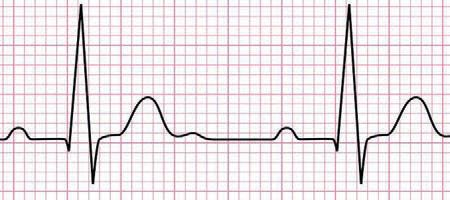<figcaption>Figure fig_ch02_p041_19 (Page 41)</figcaption></figure>
  <div class="page-content">
    <p>zœ“”šȻc IX</p>
    <p>ǣ„ǝŭ†c (Heart beat)
¢zš›ź§
¢ǡšÇ</p>
    <p>sšÅ›šs§
£–Ú›Ç
(Cardiac cycle)</p>
    <p>nğ›Æ
–›¢ǡšÇ</p>
    <p>¡“Äğ›ÚšÅ
–›¢ǡšÇ</p>
    <p>x›ŅœsŽc 2.14 sšÅ›šs§ £–Ú›Ç
x›ŅœsŽc 2.14NJŗ›ă“¢Ƽšn¡‚ƼšcvĞāÇ¢xÅų‚š§
pŽsšÅ›šs§ £–Ú›Ç#
y
y
y
g“ ˆžÅśšsų‚›†§ 0.8 ¡–Úź§ –Œc f“”DZŒš§
pŽ sšÅ›šs§ £–Ú›‘š§ pŽ Ǣ„ǜŭ†c (Heart beat)
mų›¡ƀ}ų‚§ eā¡†¡ÿ›Æ –š šŽ Ǣ„ǜŭ†
†›ŽÚ§mŅš›Ž›Úc#
Ǣ„¢ˆ”›s‘¡} ‚š‘šŃsŒš –¢ÿšx“c ˆžÅ“Ǚ›‚›
Ƃšˆ›ÚŒš§Ǣ„ǜŭ††›ŽÚ›¡† †›ũ›Úų‚§Ǣ„
es‘¡} –¢ÿšxś†š“”DZŒš £“„DZ‚ ‚Žcuā¡‘
iƈš„›ƀ›Úų‚§ “‚§ mğ›Ĺ›¡ź‹›Ĺ››¡ SA ¢†š§
(SA Node) mų ‹šuŒš§ g‚§ ¢ˆ–§¢ŒÚÅ (Pace maker) mųc
e›¡ƀ}ų</p>
    <p>g¢ɈšsšÅ›¢š÷šc
(Electrocardiogram)</p>
    <p>Ǣ„c ǜŭ›Ú¢ƠšÇ Ǣ„‹›Ĺ›s‘›Æ
e†‹“¡ƀ}ų £“„DZ‚‚ŽcuāÇ
(Electric waves) ÷š‰§ ŽžˆĹ›Æx›ŅœsŽ›Ú
ų‚š§  ECG g¢ɇš sšÅ›¢š ÷šc 
ECG ˆŽ›¢”š ›ăšÆǢ„Ĺ›¡ź Ƃ“Åņ
£“sDZāÇ‚›Ž›ă›šÄ–š ›Úc
41</p>
    <p>SA ¢†š§
¢ˆ–§¢ŒÚÅ</p>
    <p>Å
¢ˆ–§¢ŒÚ†
Ƃ“ÅĹ Ž›Æ
“
䌌ƼšĹ›¡ź
Ĺ
Ǣ„
c
Ƃ“Åņƀ}
¡
Ĺ
†›†›Å ¡†#
ų¡‚ā ž
s¡ĬĹ</p>
  </div>
</section><section class="page-section" id="page-42">
  <div class="page-header"><span class="page-number">Page 42</span></div>
  <figure class="diagram-card" id="fig_ch02_p042_01">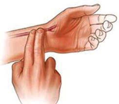<figcaption>Figure fig_ch02_p042_01 (Page 42)</figcaption></figure>
  <figure class="diagram-card" id="fig_ch02_p042_02"><figcaption>Figure fig_ch02_p042_02 (Page 42)</figcaption></figure>
  <figure class="diagram-card" id="fig_ch02_p042_03"><figcaption>Figure fig_ch02_p042_03 (Page 42)</figcaption></figure>
  <div class="page-content">
    <p>zœ“”šȻc IX</p>
    <p>ˆÇ–§(Pulse)</p>
    <p>›
£sĹĬ ¡‚š
Ƽš¡‚Œ¢Ǯ šu
‹
¡Ú”ŽœŽ Ú§
Œ
ā‘›Æ† ‹“
†
ˆÇ–§e 
¡ƀ}c#
s¡ĬŞ</p>
    <p>¢šÜŌšÅ ¢Žšu›s‘¡} £sĹĬ x›ŅśÆ sš›ă›Ž›Ú
ų‚¢ˆš¡ˆŽ›¢”š ›Úų‚§ †›āÇNJŗ›ă›Ğ¢Ĭš#mŦ›
†š›Ž›Úšcgā¡† ¡xƭų‚§#
x›Ņś¢‚¢ˆš¡†›ā‘¡}“‚£s›¡xžĬ“›Žc
†}“›Žcg}‚£sĹĬ›ÆeŒÅśƀ›}›Ús
†›ā‘¡} £s“›Žs‘›Æ pŽ ǜŭ†c e†‹“¡ƀ}ų›¢Ƽ#
g‚š§ˆÇ–§ (Pulse).
x“¡} †Æs››Ž›Úų –žx†sÇ iˆ¢šu›ă§ xÅă¡xƪ§
ˆÇ–›†§ Ƃš¢šu›s†›Å“x†c ŽžˆœsŽ›Úž
y g}‚¡“Äğ›Ú›‘›¡ź–¢ÿšxc
y
Œ†œ‹›Ĺ›¡}gšǘ›s‚
y
Œ†œ‹›Ĺ›¡} “›sš–“c ˆžÅ“Ǚ›‚›Ƃšˆ›Úc
Ǣ„ǜŭ††›ŽÚc (Heart beat rate)ˆÇ–§ †›ŽÚc (Pulse rate)
‚ƣ›Æm¡Ŧÿ›cŠŰŒ¢Ĭš#
hƂ“Åņc ¡xƪ¢†šÚž
sĞ›sÇ¢zš›s‘š›†›ų¢”•ce‚›ÆpŽšÇ–ǴŦc
Ǣ„ǜŭ††›ŽÚce¢‚–Œc‚¡ųŒ¢Ǯš¡‘¡ÚšĬ§
ˆÇ–§†›ŽÚcs¡Ĭŝs–Œã›ž‚iƀ“ŽĹšÄ
¢ǡšˆ§“šă§ (Stop watch)iˆ¢šu›Úšc‹›ăe‘“›¡†
ˆĞ›s2.3Æ¢Žt¡ƀ}Ĺs
e‚›†¢”•c e¢‚šÇ ‚¡ų pŽŒ›†›Ğ§ ¢†Ž¢ĹÚ§
“DZššŒĹ›Æ nÅ¡ƀ}s ‚}Åų§ Œs‘›Æ –žx›ƀ›ă
Žœ‚››ÆǢ„ǜŭ††›ŽÚcˆÇ–§†›ŽÚcmŅš¡ų§
ˆĞ›s›Æ¢Žt¡ƀ}Ĺc
sĞ›sLjŽǜŽcŒš›g¢‚ ƂƽśsÇ¡xƪ§“›“ŽāÇ
ˆĞ›s2.3Æ¢Žt¡ƀ}Ĺž</p>
    <p>âŒ</p>
    <p></p>
    <p>ǣ„ǝŭ††›ŽÚ§</p>
    <p>†ƠÅ sĞ›s‘¡} ¢ˆŽ§ “›NjŒš“  “DzššŒĹ›†§
 

ǚ›Æ 
¢”•c
</p>
    <p></p>
    <p></p>
    <p></p>
    <p></p>
    <p></p>
    <p></p>
    <p></p>
    <p></p>
    <p></p>
    <p> ˆÇ–§†›ŽÚ§
“›NjŒš“
ǚ›Æ</p>
    <p>ˆĞ›s2.3Ǣ„ǜŭ††›ŽÚcˆÇ–§†›ŽÚc
42</p>
    <p>“DzššŒĹ›†§
 ¢”•c</p>
  </div>
</section><section class="page-section" id="page-43">
  <div class="page-header"><span class="page-number">Page 43</span></div>
  <figure class="diagram-card" id="fig_ch02_p043_01">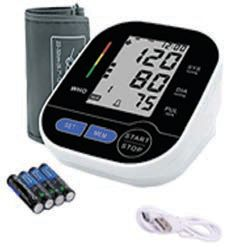<figcaption>Figure fig_ch02_p043_01 (Page 43)</figcaption></figure>
  <figure class="diagram-card" id="fig_ch02_p043_02">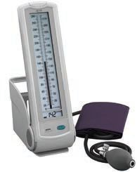<figcaption>Figure fig_ch02_p043_02 (Page 43)</figcaption></figure>
  <figure class="diagram-card" id="fig_ch02_p043_03"><figcaption>Figure fig_ch02_p043_03 (Page 43)</figcaption></figure>
  <div class="page-content">
    <p>zœ“”šȻc IX</p>
    <p>ˆĞ›s›¡ “›“ŽāÇ “›”s†c ¡xƪ§ “›NJŒš“Ǚ›c
“DZššŒc ¡xƪ¢”•“c Ǣ„ǜŭ† †›ŽÚ›c ˆÇ–§
†›ŽÚ›cmŦ§ “DZ‚DZš–Œš§iĬš›Ğǫ¡‚ų§s¡ĬŞ</p>
    <p>ŽÞ–ƣńc (Blood pressure)
Ǣ„c –¢ÿšx›Ú¢Ơš’c ˆžÅ“Ǚ›‚› Ƃšˆ›Ú¢Ơš’c
Œ†›s‘›†‹“¡ƀ}ųŒÅ„Œš§ ŽÞ–ƣńc
Ǣ„c –¢ÿšx›Ú¢Ơš’c “›NJŒš“Ǚ›Æ mŝ¢Ơš’c
p¢ŽŒÅ„Œš›Ž›Ú¢Œš Œ†›s‘›Æe†‹“¡ƀ}s#
ˆĞ›s 2.4 “›”s†c ¡xƪ§ ŽÞ–ƣń¡Ĺڝ›ă§ †›uŒ†c
ŽžˆœsŽ›ă§s›ƀ§‚ƭššÚs
Œ†›s‘›Æ
ŽÞ–ƣń
e†‹“¡ƀ}ų
ś¡ź ¢ˆŽ§
ŒÅ„c(mmHg)</p>
    <p>ǣ„
Ƃ“Åņc</p>
    <p>ŽÞƂ“š—Ĺ›¡ź„›”</p>
    <p>–›¢ǡšÇ</p>
    <p>Ǣ„c–¢ÿšx›Ú¢ƠšÇns¢„”c
70Œ››ŽÞc Œ†›s‘›¢Ú§ˆƠ§
¡xƭ¡ƀ}ų</p>
    <p>120</p>
    <p>–›¢ǡš‘›s§
Ƃ•Å</p>
    <p>¢ǡšÇ</p>
    <p>Ǣ„cˆžÅ“Ǚ›‚›Ƃšˆ›Ú¢ƠšÇ
ns¢„”cŒ››ŽÞc
Ǣ„Ĺ›†ǫ›¢Ú§ Ƃ¢“”›Úų</p>
    <p>80</p>
    <p>¢ǡš‘›s§
Ƃ•Å</p>
    <p>ˆĞ›s2.4ŽÞ–ƣńc
h ŽĬ§  ŒÅ„ā‘c ¢xÅų‚š§  pŽš ‘¡} ŽÞ–ƣńc
f¢ŽšuDZ“š†špŽš‘¡}–š šŽŽÞ–ƣńc 120/80 mmHg
mųš§ ¢Žt¡ƀ}Ĺų‚§ŽÞ–ƣńche‘“›Æ†›ųc
sž}ų‚§ £—ƀÅ¡}ĕÄmųcsų‚§ £—¢ƀš¡}ĕÄ
mųce›¡ƀ}ų</p>
    <p>„Ĺ›
ŽÞ–ƣÅ ă›
¡nǮÚ§sšŽ
sÇÚ g‚§
¡ŒŦ§#
”ŽœŽ¡Ĺ 
Šš ›Úų#
¡‚ā¡†
s¡ĬŞ</p>
    <p>ǝ›¢öšŒš¢†šŒœǮÅ›z›ǮÆŠ›ˆ›eƀšŽǮ–§
x›ŅśÆsš›ă›ĞǫiˆsŽādž›āÇsĬ›ĞĬ¢Ƽš
g“mŦ›†š§iˆ¢šu›Úų‚§#
43</p>
  </div>
</section><section class="page-section" id="page-44">
  <div class="page-header"><span class="page-number">Page 44</span></div>
  <figure class="diagram-card" id="fig_ch02_p044_01"><figcaption>Figure fig_ch02_p044_01 (Page 44)</figcaption></figure>
  <figure class="diagram-card" id="fig_ch02_p044_02"><figcaption>Figure fig_ch02_p044_02 (Page 44)</figcaption></figure>
  <figure class="diagram-card" id="fig_ch02_p044_03"><figcaption>Figure fig_ch02_p044_03 (Page 44)</figcaption></figure>
  <figure class="diagram-card" id="fig_ch02_p044_04"><figcaption>Figure fig_ch02_p044_04 (Page 44)</figcaption></figure>
  <figure class="diagram-card" id="fig_ch02_p044_05"><figcaption>Figure fig_ch02_p044_05 (Page 44)</figcaption></figure>
  <figure class="diagram-card" id="fig_ch02_p044_06">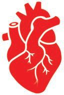<figcaption>Figure fig_ch02_p044_06 (Page 44)</figcaption></figure>
  <div class="page-content">
    <p>zœ“”šȻc IX</p>
    <p>“›„u§ ¡ź –—š¢Ĺš¡} h iˆsŽā‘›Æ n¡‚ÿ›c
pų§ iˆ¢šu›ă§ ŽÞ–ƣńc ˆŽ›¢”š ›Úų Žœ‚›
ˆŽ›”œ›ă¢”•c ǗžÇ ¡—Æŧ ãƔ›¡ź f‹›ŒtDZśÆ
㚖›¡sĞ›s‘¡}ŽÞ–ƣńcs¡ĬŞ</p>
    <p>„ǵ›ˆŽDz†c (Double circulation)
”ŽœŽĹ›¡ź pŽ‹šuŝ†›ųǫ ŽÞc “œĬc e¢‚ ‹šuŧ
mŝų‚›†›}›Æ mŅ‚“ Ǣ„Ĺ›ž¡} s›
gāųĬ§#
x›ŅœsŽc 2.15,“›“Žcmų›““›”s†c ¡xƪ§ †›uŒ†c
ŽžˆœsŽ›Úž
”ǵš–¢sš”c</p>
    <p>”ǵš–¢sš” Œ†›</p>
    <p>jÅ ǵŒ—š–›Ž
e¢ šŒ—š–›Ž</p>
    <p>ˆÇŒ›ˆŽDz†c</p>
    <p>”ǵš–¢sš”–›Ž</p>
    <p>Œ—š Œ†›</p>
    <p>–›ǢŒ›s§ˆŽDz†c
”ŽœŽĹ›¡ź “›“› ‹šuāÇ</p>
    <p>x›ŅœsŽc 2.15 Œ†•DZ†›¡ ŽÞˆŽDZ†c</p>
    <p>n¡‚Ƽšc ˆŽDZ†āÇ iÇ¡ƀ}ų‚š§ Œ†•DZ†›¡
ŽÞˆŽDZ†c#

</p>
    <p>44</p>
  </div>
</section><section class="page-section" id="page-45">
  <div class="page-header"><span class="page-number">Page 45</span></div>
  <figure class="diagram-card" id="fig_ch02_p045_01"><figcaption>Figure fig_ch02_p045_01 (Page 45)</figcaption></figure>
  <div class="page-content">
    <p>zœ“”šȻc IX</p>
    <p>–›ǡŒ›s§ˆŽDZ†c (Systemic circulation)g}¢Ĺ ¡“Äğ›Ú›‘›Æ
fŽc‹›ă§“¢Ĺnğ›Ĺ›cˆÇŒ›ˆŽDZ†c (Pulmonary circulation) “¡Ĺ ¡“Äğ›Ú›‘›Æ fŽc‹›ă§ g}¡Ĺ
nğ›Ĺ›c e“–š†›Úų ŽÞˆŽDZ†Ĺ›Æ p¢Ž
ŽÞc ŽĬƂš“”DZcǢ„Ĺ›ž¡}s}ų¢ˆšsų‚›†šÆ
Œ†•DZ†›¡ ŽÞˆŽDZ†c „Ǵ›ˆŽDZ†c (Double circulation)
mų§e›¡ƀ}ų</p>
    <p>x›ŅœsŽc 2.15 Æ Ǣ„esÇ sž}› iÇƀ}Ĺ› –›ǡŒ›s§
ˆŽDZ†c ˆÇŒ› ˆŽDZ†c mų›“¡} ¢ƌšxšÅНsÇ
‚ƭššÚž
Ǣ„Ĺ›¡ź Ƃ“Åņ‰Œš›ŽÞc”ŽœŽĹ›}†œ‘cˆƠ§
¡xƭ¡ƀ}ųhŽÞśÆqs§–›zÄ¢ˆš•sv}sāÇ
ŒǮv}sāÇ mų›“ iĬšsŒ¢Ƽš g“ }›•DZŝ“Ĺ›ž¡}
¢sš”ā‘›¢Ú§ Ƃ¢“”›Úų h ¢ˆš•sv}sā¡‘
¢sš”āÇƂ¢šz†¡ƀ}Ĺų‚š§ –Ǵšc”œsŽc</p>
    <p>ǣ„š¢ŽšuDzc
Ǣ„Ĺ›†Ĭšsų ‚sŽšÅ ŒǮ§ e““ā‘¡} Ƃ“Åņ
ā¡‘c ¢„š•sŽŒš› Šš ›Ú›¢Ƽ# Ǣ„š¢ŽšuDZ¡Ĺ
¢„š•sŽŒš› Šš ›Úų v}sāÇ n¡‚ƼšŒš§# ›ǡ§
“›ˆœsŽ›Ú
y “DZššŒÚ“§
y e†š¢ŽšuDZsŽŒš‹ä”œāÇ
y
y
gŎc v}sāÇ Ǣ„š¢ŽšuDZ¡Ĺ mƂsšŽc Šš ›Úc#
Ǣ„š¢ŽšuDZ“Œš› ŠŰ¡ƀĞ ¢t†Ĺ›¡ź pŽ‹šuc
†ƴ››Ž›Úų e‚§ “›”s†c ¡xƪc “›“Ž¢”tŽc
†}śc ǣ„š¢ŽšuDzc mų“›•Ĺ›Æˆ‚›ƀ§‚ƭššÚž</p>
    <p>45</p>
    <p>š•s
q¢Žš ¢ˆ c
v}s¡Ĺ šz

”ŽœŽc Ƃ¢ ų
†¡ƀ}Ĺ #
¡‚ā¡†
s¡ĬŞ</p>
  </div>
</section><section class="page-section" id="page-46">
  <div class="page-header"><span class="page-number">Page 46</span></div>
  <figure class="diagram-card" id="fig_ch02_p046_01">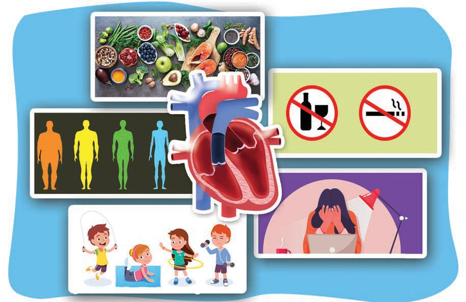<figcaption>Figure fig_ch02_p046_01 (Page 46)</figcaption></figure>
  <figure class="diagram-card" id="fig_ch02_p046_02"><figcaption>Figure fig_ch02_p046_02 (Page 46)</figcaption></figure>
  <div class="page-content">
    <p>zœ“”šȻc IX</p>
    <p>f¢ŽšuDZsŽŒš
‹ä”œc
Œ„DZˆš†cˆs“›‚}ā›
„njœāÇp’›“šÚÆ</p>
    <p>BMIe†–Ž›ă§
”ŽœŽ‹šŽc⌜sŽ›ÚÆ</p>
    <p>Œš†–›sˆ›Ž›ŒÚc
vžsŽ›ÚÆ</p>
    <p>“DZššŒc</p>
    <p>sšÚšcǣ„¡ĹsŽ‚¢š¡}
Ǣ¢ŝšu›s‘¡} mĴc sž}ų‚š› ˆ~†āÇ
–žx›ƀ›Úų e†š¢ŽšuDZsŽŒš ‹ä”œ
ā‘c “DZššŒÚ“Œš§ g‚›¡ź ŒtDZsšŽ
āÇ
¡sš’ƀ}ā›‹äceŒ›‚Œš›s’›Úų‚§
Œ†œ‹›Ĺ››Æ ¡sš’ƀ§ e}›Ěsž}ų‚›†§
sšŽŒšsų g‚§ e‚›¢ŽšǗ§‘œ¢š–›–§
¢šsǣ„„›†c
(Atherosclerosis) mų ¢Žšuš“Ǚ›¢Ú§ †›
ڝųg‚›¡ź‰Œš›¡sš¢š› Œ†››Æ
ŽÞc sЈ›}›ă§ ¡sš¢š› ¢Ņšc¢Šš–›–§ (Coronary thrombosis) mų e“Ǚ
iĬšssc e‚§ Ǣ„švš‚Ĺ›†§ (Heart attack) sšŽŒšssc ¡x¢ƪښc
Œǘ›•§sś¡ ŽÞڝ’›Ĭšsų ‚}Ǡ“c ŽÞڝ’Æ ¡ˆšĞų‚c
–§¢ğšÚ›†§ (stroke) sšŽŒšsų</p>
    <p>46</p>
  </div>
</section>
    </main>
    <footer>
      <div class="nav-bar"><a href="part_1_chapter_01.html">← Chapter 1 (Pages 7-26)</a><a href="index.html">☰ Index</a><a href="part_1_chapter_03.html">Chapter 3 (Pages 47-66) →</a></div>
      <p style="text-align: center; font-size: 0.85rem; color: var(--text-muted); margin-top: 2rem;">
        Kerala SCERT Class 9 Biology (Malayalam Medium) - Extracted Study Text
      </p>
    </footer>
  </div>
</body>
</html>
